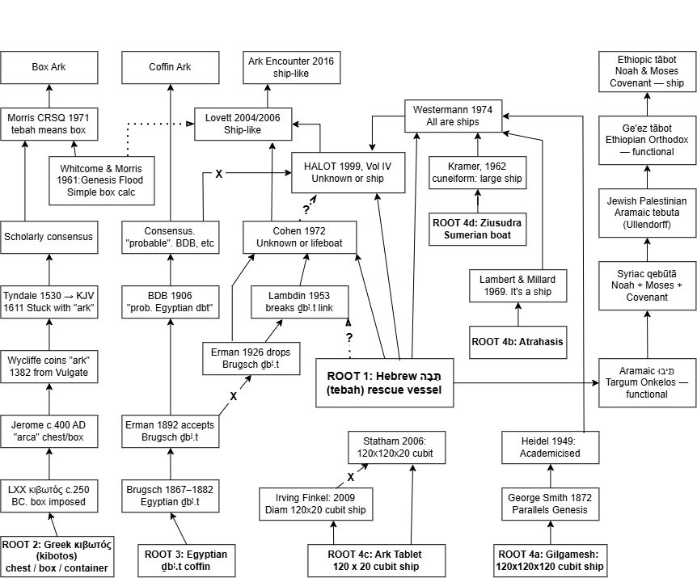
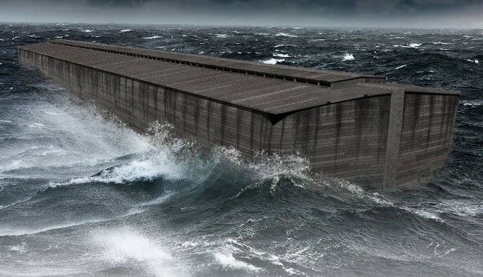
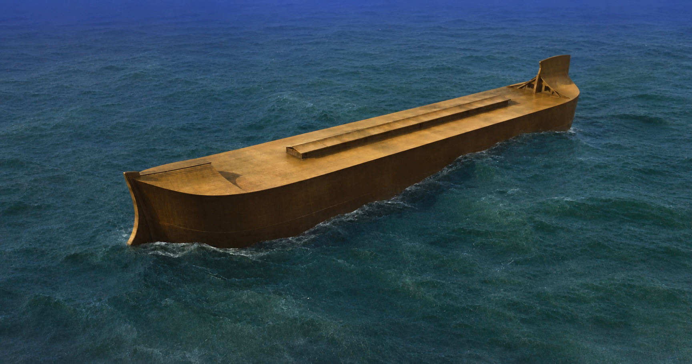
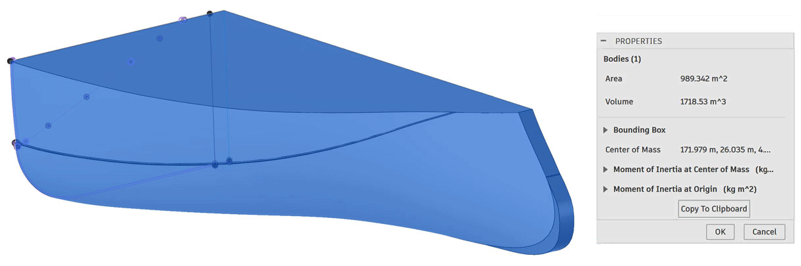

Note on nodes: A node represents a genuine contribution — new evidence, new argument, or significant influence on the transmission chain. Scholars who copied existing positions without contributing new material are not shown as separate nodes; their names appear where relevant in the paper text.
The Hebrew word for Ark is tebah.
What does tebah mean?
Can't say for sure. Probably rescue vessel.
In other words: "The etymology of tebah is undetermined. In both occurrences the word functions as a functional terminus technicus describing a vessel whose purpose is the preservation of life."
Cohen, C. "Hebrew tbh: Proposed Etymologies." JANES 4 (1972): 37–51.
Introduction
The Hebrew word tebah (תֵּבָה) occurs exactly twice in the Old Testament — once for Noah's vessel, once for Moses' basket. It has no clear etymology, no post-flood cognates, and no occurrences from which to accumulate meaning. In 1972 a Columbia University graduate student named Chayim Cohen published a fifteen-page peer-reviewed paper surveying every proposed etymology and concluding that none of them held. Etymology undetermined. The paper has never been rebutted. It has been cited in footnotes and ignored in conclusions for fifty-three years.
The box-shaped Ark assumption — that tebah specifically denotes a rectangular vessel — rests on a proposed Egyptian loanword equation first proposed by Heinrich Brugsch in 1867, embedded in the standard Hebrew lexicon (BDB) in 1906, and copied ever since without re-evaluation. The equation fails at every level: the Hebrew had no motive to borrow (the word aron already covered chest and coffin); the Egyptian donor words are never used for boats; and the consonantal correspondence is one certain match, one arguable, and one mismatch — not a cognate by modern standards. The Septuagint compounded the error by rendering tebah as kibotos (chest) — a functional rather than etymological choice that imposed geometry the Hebrew does not contain. Josephus then replaced kibotos with larnax — Deucalion's word — not as a translation of the Hebrew but as a cultural bridge for his Roman Gentile audience. He retained the Genesis 6:15 dimensions while applying a word that means a two-person chest. This is not translation error. It is textual vandalism committed with full knowledge of the contradiction.
The sociology of this failure is instructive. The academic incentive structure rewards complexity and consensus and penalises simplicity and dissent. Propose a new Egyptian loanword connection, a new documentary source, a new Hellenistic influence layer — and you get published, cited, and tenured. Say what the Hebrew actually says and trace the transmission chain that buried it — and you get Cohen's fate: cited in footnotes, engaged in none, dead in 2017 without a response. The same dynamic operates in other fields. It is worth naming here because this paper's argument is simple. The Hebrew word carries no geometric information. The tradition imposed geometry the text does not supply. Cohen established this in 1972. The field chose not to notice.
Structure of This Paper — Five Transmission Lines
The evidence is organised around five independent transmission lines, each tracing a different path from the Hebrew original to the present. The flowchart at the top of this page shows all five simultaneously — click it to open the zoomable SVG version.
| Line | Path | Reading | Terminal node |
|---|---|---|---|
| 1 — English box tradition | LXX κιβωτός → Vulgate arca → Wycliffe → English vocabulary → Tyndale → KJV | Box — no Hebrew DNA. Greek → Latin → English only. Hebrew תֵּבָה never entered this chain. | Every English reader since — incl. Hollywood (2014) |
| 2 — Academic consensus | Brugsch (1867) → Erman (1892) → BDB (1906) → Cassuto, Wenham, Hoffmeier, Spoelstra | Box — Egyptian loanword equation copied without testing. Erman silently withdrew it in 1926. Nobody noticed until Cohen (1972). | Still running 2026 — Hoffmeier, Tigay, Spoelstra |
| 3 — The corrected tradition | Hebrew תֵּבָה → Lambdin silence (1953) → Erman silence (1926) → Schmidt → Cohen (1972) → HALOT (1994) ← Westermann ← Kramer/Lambert-Millard ← George Smith (1872) ← Cuneiform (buried ~500 BC) | Ship / etymology undetermined — two independent lines converging: Hebrew philology (Cohen) and ANE archaeology (cuneiform). HALOT is the establishment confirming both without citing either. | AiG Ark Encounter — ship-shaped |
| 4 — Aramaic functional tradition | Hebrew תֵּבָה → Aramaic תֵּיבוּ (Targum Onkelos) [terminal — clean] → Syriac qebūtā [poisoned terminal — LXX Covenant conflation via reverse contamination] | Targum Onkelos preserves the identical word with no geometric imposition — the one clean node in the Eastern chain. Syriac qebūtā is contaminated by LXX-derived conflation with the Ark of the Covenant (a genuine box) — box meaning bleeds UP from Covenant onto Noah's vessel. Ge'ez and Ethiopic tābot are LXX daughter traditions — Ge'ez Bible translated from LXX, not Hebrew. | Targum Onkelos תֵּיבוּ — Noah + baby Moses only, identical word, no geometry, no LXX contamination |
| 5 — Functional periphery | Hebrew תֵּבָה → Aramaic → Coptic thebi → Ethiopic tābot | Functional — no geometry imposed. Word preserved across Semitic and Afro-Asiatic languages carrying the functional meaning without geometric assumption. | Ethiopic tābot — Noah + Moses + Covenant, ship |
Lines 1 and 2 both produce the box reading — but from completely independent sources. Line 1 derives from the LXX's Greek translation choice (ROOT 3: κιβωτός). Line 2 derives from a proposed Egyptian loanword equation (ROOT 2: ḏbꜣ.t). Neither derives from the Hebrew text itself. Lines 3, 4, and 5 all produce the ship or functional reading — also from independent sources: Hebrew philology and ANE cuneiform scholarship (Line 3), the Aramaic/Syriac/Ethiopic sister-language tradition (Line 4), and the Coptic functional tradition (Line 5).
The consequence: the box reading requires two separate errors — one Greek translation decision and one flawed etymological equation — to have propagated simultaneously and never been corrected. The ship reading requires only that the Hebrew text be read as it stands. This paper traces each line, evaluates the evidence, and concludes with the engineering consequence: a vessel specified by dimensions alone, with hull form determined by naval architecture rather than etymology, is a ship. The AiG Ark Encounter — the vessel this paper's author contributed to as a design consultant — is the architectural result of taking Cohen seriously.


Argument Summary
The following points constitute the core argument, organised by transmission line. Each links to its full development below. See also the transmission tree diagram.
{kind=link}
Line 1 — The English box tradition (Greek → Latin → English)
- Tebah appears exactly twice — Noah's vessel and Moses' basket. For Moses' Egyptian reed basket, the archaeological record shows these to be round or oval approximately 98% of the time. The idea of tebah being a box has only a 2% prior before the philological evidence is considered.
- Moses' basket requires special pleading for the box reading — reed construction produces curved geometry naturally; the text provides no instruction to build rectangularly; Hebrew had aron (אָרוֹן) for coffin/chest and Moses used it himself (Gen. 50:26, Exodus 25). He chose tebah.
- The Noah–Moses parallel — systematic similarities and systematic differences between the two tebah vessels confirm both share a functional quality, not a geometric one. Neither is a coffin. Both are instruments of a plan.
- Tebah's two occurrences have conflicting shapes — if tebah carries the shape of Moses' basket, Noah's Ark was round. Nobody accepts this. The argument is therefore invalid.
- The LXX does not consistently translate tebah as kibotos — it uses kibotos for Noah but thibis for Moses. Thibis is a hapax in Greek meaning papyrus-woven basket — not a box. The Suda's kibotion gloss is circular and undermined by its own basket qualifier. The LXX recognised the material constraint; the English tradition collapsed the distinction.
- Kibotos is functional, not geometric — it also describes the Ark of the Covenant, which nobody argues is box-shaped on the basis of the word.
- The English word "Ark" is the problem — Wycliffe (1382) coined it from Latin arca, three translations deep from the Hebrew. Tyndale went back to the Hebrew in 1530 and still wrote "ark" — because Wycliffe had already put the word in the language. Hebrew תֵּבָה never entered the English chain. The box assumption is Greek → Latin → English only.
Line 2 — The academic consensus (Egyptian equation)
- Cassuto's parallelepiped claim is unreferenced assertion — the only scholarly source for the geometric reading offers no philological evidence and two engineering arguments that are demonstrably wrong: (a) large vessels rest on flat ground routinely — flat-bottomed bulk carriers dry-dock on their hulls; (b) a vessel moved by wind and water is still a ship — navigation is not a defining property of a ship. Both arguments demolished by Cohen (1972) and by modern naval architecture. "Precisely" signals confidence in the absence of derivation.
- Cohen (1972) — etymology undetermined — seven pages of peer-reviewed analysis conclude no donor language supplies geometric meaning. Unrebutted 53 years. The Brugsch equation (1867) fails: no motive (Hebrew had aron); Egyptian ḏbꜣ.t never used for boats; consonants one match, one arguable, one mismatch. Erman accepted the equation in 1892 and silently withdrew it in 1926 — noticed only by Cohen. The Egyptologists knew. The biblical scholars never asked.
- Lambdin (1953) and the silent witnesses — the specialist Egyptian loanword catalogue omits tebah. Hoffmeier (1997), Tigay, Spoelstra (2020) all assert Egyptian etymology without engaging Cohen. Three authors, one story. Creationist scholars who reject JEDP should apply the same evidentiary standard to Brugsch's equation — both emerged from the same pre-rigorous philological moment.
Line 3 — The corrected tradition (Cohen + cuneiform)
- The transmission chain — four independent roots, five transmission lines. The box tradition derives from two sources (LXX and Brugsch) neither of which derives from the Hebrew. The LXX wasn't correcting a corrupt text. It was corrupting a correct one.
- The vanilla translation — Genesis 6:14–16 stripped to root meanings: a life-vessel of unknown wood, nests, covering, noon-brightness, an opening, lower/second/third. No box. No pitch. No window. No decks.
- Spoelstra (2020) — confirms functional reading but accepts box shape; cites Cohen six times, engages him zero times. The transmission chain still running in 2020.
- HALOT (1994) — gold standard modern lexicon: "decision open"; "vessel was a ship"; "descriptions and designations each have their own history." Cohen not cited — same conclusion independently reached via Westermann, Kramer, Lambert-Millard, and the cuneiform tradition resurrected by George Smith (1872).
Line 4 — Aramaic functional tradition
- The Aramaic chain — the communities linguistically closest to Hebrew never imposed box geometry on tebah. Targum Onkelos (Aramaic תֵּיבוּ), Syriac qebūtā, and Ge'ez tābot (via Jewish Palestinian Aramaic tebuta, per Ullendorff) all preserve the functional reading across four languages and two millennia. The box required Greek librarians to invent it and German philologists to explain it. Everyone else was fine.
Lines 3–5 converge — The positive case
- Shape from naval architecture — dimensions specify size, not shape. Hull form is determined by engineering. The ship-shaped Ark satisfies all constraints; the box fails most of them.
- Weight of evidence — fifteen independent lines — philological, lexicographical, textual, archaeological, engineering, linguistic, and ANE cuneiform evidence all independently favour the functional reading. Five items favour the box reading — all of low weight, all either pre-Cohen, post-Cohen without engagement, or demonstrably circular. Qualitative convergent evidence replaces the numerical Bayesian tables previously in this section — the prior probabilities in those tables were subjective and a hostile reviewer could reassign them. The convergence of fifteen independent lines is not.
- Real-world consequence — taking Cohen seriously produces a ship-shaped Ark. The AiG Ark Encounter is the architectural result of this paper's argument.
1. Tebah Appears Only Twice
Tebah (תֵּבָה) occurs exactly twice in the entire Hebrew Bible:
| Reference | Object | Material | Shape given by text |
|---|---|---|---|
| Genesis 6–9 — Noah's vessel | Seagoing vessel | Gopher wood | 300×50×30 cubits (dimensions only) |
| Exodus 2:3 — Moses' basket | Infant's basket | Bulrushes (papyrus reed) | None given |
With only two occurrences and no other attestations, the word's meaning must be derived from etymology and context — not from accumulated usage. This severely limits any claim about geometric content.
Tebah is a dis legomenon — a word occurring exactly twice in the corpus. A hapax legomenon ("said once") gives nothing to compare; a dis legomenon gives exactly one comparison. That single comparison — Moses' basket — actively defeats the geometric reading. The entire 2,500-year box-Ark tradition rests on a word that appears twice in the Hebrew Bible, one occurrence of which is physically incapable of being rectangular.
2. Moses' Basket Requires Special Pleading for the Box Reading
Papyrus reed construction produces curved vessels by the nature of the material. Reeds are flexible and taper — they cannot be formed into sharp-cornered rectangular geometry without a rigid framework that the text does not mention and ancient practice does not support. Moses' basket was round or oval, as the material demands.
The archaeological record confirms this. Egyptian reed baskets in museum collections are round or oval approximately 98% of the time. The geometric reading of tebah requires Moses' basket to belong to the 2% exception — with no textual support for that inference whatsoever.
If tebah means "rectangular box," Moses' mother wove a rectangular box from bulrushes. This is physically impossible. Therefore tebah cannot mean "rectangular box." QED.
Spoelstra's Egyptian loanword thesis (ḏbȝ.t = coffer/coffin/Götterschrein) attempts to explain the functional parallel (life-preservation) while sidestepping the geometric impossibility. But a coffin-shaped papyrus basket is no more possible than a box-shaped one. The material constraint is absolute. Moses' basket is a basket case for the geometric argument.
One further point disposes of the coffin reading entirely: Hebrew already has a word for coffin. Genesis 50:26 — "Joseph died... and he was put in a coffin (aron, אָרוֹן) in Egypt." Aron is the standard Hebrew word for chest, box, or coffin — the same word used for the Ark of the Covenant. Moses knew this word. He grew up in Pharaoh's household where Egyptian coffin tradition was omnipresent. If he intended a coffin for the basket in Exodus 2:3, he would have written aron. He wrote tebah. The choice was deliberate.
The same applies to Noah's vessel. If Genesis intended a box or coffin, aron was available. The author chose tebah instead — a word that carries no geometric information, whose etymology is undetermined, and whose only other occurrence is a basket woven by a mother to save her son's life. The coffin reading requires ignoring the available coffin word in favour of a word that demonstrably doesn't mean coffin.
3. The Two Tebah Narratives — Care, Preparation, and Divine Purpose
The two tebah occurrences in the Hebrew Bible are not merely linked by word — they are linked by a detailed pattern of deliberate preparation, care, and divine purpose. The word carries this weight; it is not geometrically neutral but it is not geometrically specific either. What it carries is the quality of purposeful, prepared, divinely-connected vessel construction.
| Element | Noah's tebah (Genesis 6–9) | Moses' tebah (Exodus 2:3–4) |
|---|---|---|
| Vessel word | tebah | tebah |
| Construction | Purpose-built to divine specification — 300 × 50 × 30 cubits (Gen 6:15) | Purpose-built for mission — "she took a tebah of papyrus for him" (Ex 2:3) |
| Scale of effort | Colossal — dimensions stated in text; enormous labour implied by scale | Intimate — infant-sized; urgent construction by a mother concealing an illegal child |
| Waterproofing | kopher inside and out (Gen 6:14) — pre-flood pine resin | hemar + zepheth (Ex 2:3) — post-flood petroleum derivatives |
| Placement | Upon the waters of the flood | Among the reeds at the river's edge — deliberate positioning |
| Guardianship | God closes the door (Gen 7:16) | Miriam stood at a distance to watch (Ex 2:4) |
| Outcome | Humanity preserved through catastrophe | Israel's deliverer preserved through persecution |
Cohen's literary allusion argument is correct as far as it goes — the Exodus author used tebah to evoke the divine protective quality of Noah's vessel. But the parallel runs deeper than protection: both vessels are characterised by deliberate, careful, layered preparation. Neither is improvised. Both are built specifically for the mission.
The Waterproofing Materials — A Geological Marker
The waterproofing materials in the two narratives are different words for different materials:
| Vessel | Word | Material | Character |
|---|---|---|---|
| Noah's tebah | kopher | Pine resin — pre-flood biological origin | Single word; single material |
| Moses' tebah | hemar | Bitumen — naturally seeping, liquid/viscous, petroleum-derived | Two words; two materials — |
| zepheth | Pitch — more solid, softens in sun, petroleum-derived | primer and top coat |
Hemar — naturally seeping bitumen, reddish and viscous, used as mortar at Babel (Gen 11:3) and harvested from Dead Sea pits (Gen 14:10). A liquid penetrating sealant, worked into the papyrus weave. Zepheth — solid pitch, softening in sun, possibly a loanword; occurs only here and Isaiah 34:9. A solid outer coating providing structural waterproofing on the surface.
Applied together to Moses' basket they describe sophisticated waterproofing practice — liquid primer worked into the weave, solid pitch coat on the surface. The two materials working together do what kopher alone did for Noah's hull.
The difference between the two narratives is not arbitrary. Kopher is a pre-flood biological product — pine resin from pre-flood forest giants. After the flood, those forests and their resin were gone. What remained was the petroleum deposited by the rapid burial of pre-flood organic material under flood sediments — bitumen seeping to the surface at natural wells. Moses' mother used what was available in the post-flood world. She could not have used kopher even if she had known the word — the material no longer existed. See kopher vs hemar for the full geological argument.
Egyptian Basket Forms — Coil Construction
Egyptian basketry is characterised by coil construction — bundles of papyrus or grass coiled in overlapping rings and stitched together. This technique produces inherently rounded or oval forms. Sharp-cornered rectangular geometry is not achievable by coil construction without a rigid framework the text does not mention and ancient practice does not support.
Egyptian baskets, including those preserved in archaeological collections from the period, are predominantly rounded. The material and the technique together make a rectangular *tebah* physically impossible for Moses' basket. Whether the basket was made by Jochebed herself or obtained by other means — the text says "she took a *tebah* of papyrus for him" — the papyrus material dictates the form. The Moses *tebah* was rounded.
If tebah meant "rectangular box," Moses' mother produced a rectangular box from papyrus by coil construction. This is not possible. The geometry argument defeats itself on the material evidence alone.
Mosaic Authorship — Personal Knowledge
Moses is the author of both Genesis and Exodus — and therefore both tebah narratives. He did not choose the word tebah for Noah's vessel accidentally. He chose it because it was the word his family used for the vessel that preserved his own life.
Moses grew up knowing his story. His mother Jochebed nursed him after his rescue (Ex 2:9) — she had him in her care long enough to tell him what she had made and why. His sister Miriam had watched the basket. The family that built the Moses tebah was his family. The waterproofing materials — hemar and zepheth — were known to him from personal family history.
When Moses wrote Genesis 6:14 — "make yourself a tebah... coat it with kopher inside and out" — he was drawing on his own experience of what a tebah was: a purpose-built, carefully waterproofed vessel constructed for a specific mission of divine preservation. The word carried personal weight for the author. It was not a literary device chosen from a lexicon. It was a lived memory.
Cohen's literary allusion argument is therefore understated. The connection between the two tebah narratives is not merely a scribal echo — it is the author's own life reflected in the text he is writing.
The Parallel Structure — Similarities
The two tebah narratives share a systematic pattern of similarities that goes far beyond the use of a common word:
| Element | Noah's tebah | Moses' tebah |
|---|---|---|
| Purpose-built | Built to divine specification over years | Built by Jochebed for a specific mission |
| Carefully waterproofed | Kopher inside and out | Hemar + zepheth — primer and top coat |
| Deliberately placed | Upon the flood waters | Among the reeds at the royal bathing place |
| Guardian watching | God closes the door (Gen 7:16) | Miriam posted at a distance (Ex 2:4) |
| Lifeboat | The only survivors of a global catastrophe | The only survivor of a royal infanticide order |
| Precious cargo | The seed of all humanity and the animal kingdom | Israel's future deliverer |
| Entered by another | God commands Noah to enter (Gen 7:1) | Jochebed places Moses inside (Ex 2:3) |
| Exits to a new world | Post-flood earth — new creation | Royal adoption — new life |
| Found by the rescuer | God remembers Noah (Gen 8:1) | Pharaoh's daughter finds the basket (Ex 2:5) |
| Mission succeeds completely | Not one soul aboard is lost | Moses survives; Miriam's plan succeeds |
The Parallel Structure — Differences
The differences are as systematic as the similarities. The Exodus author is not copying the flood narrative — he is inverting it at every scale while preserving the essential structure:
| Element | Noah's tebah | Moses' tebah |
|---|---|---|
| Material | Wood (gopher wood) | Reeds (papyrus) |
| Waterproofing | Kopher — pre-flood pine resin | Hemar/zepheth — post-flood petroleum |
| Scale | 157m × 26m × 16m | Infant-sized basket |
| Waters | Global ocean | River edge among reeds |
| Duration | Five months afloat | Hours, perhaps minutes |
| Specification | Divine — exact dimensions given | Maternal — improvised to the mission |
| Occupant | Adult (Noah, 600 years old) | Infant (three months old) |
| Souls aboard | Eight people plus the animal kingdom | One infant |
| Cargo besides people | All land animals; year's provisions | None |
| Guardian | God — divine and absolute | Miriam — human and contingent |
| Destination | Unknown — God's geography | Known — Jochebed's intelligence |
| End of voyage | Landed on a mountain | Retrieved from the reeds by hand |
The Coffin Etymology — Demolished by Both Lists
The Egyptian word ḏbȝ.t — proposed as the donor for tebah by Erman (1900), BDB (1906), and Spoelstra (2013) — means coffin or funerary chest. A coffin is:
- For the dead — passive enclosure of a body
- Permanent — no exit intended or expected
- Without a guardian — the mission is over
- Without provisions — the occupant needs none
- Without a plan — there is no contingency
Neither tebah fits any of these. Noah's vessel is fully provisioned for a year of active life, with eight people managing the vessel and its cargo, and exits to a new world. Moses' basket is an active operation with a guardian posted, a contingency plan ready, and a precise placement calculated to achieve a specific outcome within hours. Both vessels are instruments of a plan. Neither is a coffin.
If ḏbȝ.t is the donor word, the borrowing stripped out everything that makes a coffin a coffin and retained only one property: waterproof enclosure against the element of death. Which is precisely Cohen's conclusion — the functional reading is all the word carries. The differences between the two tebah narratives are as systematic as the similarities — and both lists confirm the same thing: tebah carries the function, not the form.
4. Tebah's Two Occurrences Have Conflicting Shapes
If tebah carries the geometric character of Moses' basket — which is round or oval — then Noah's Ark was round. This is the Finkel/coracle position, and nobody accepts it as consistent with the explicit Genesis dimensions.
An argument that produces a conclusion universally rejected demonstrates its own invalidity. The shape argument from tebah defeats itself regardless of direction — toward box (physically impossible for Moses) or toward round (absurd for Noah). The word carries no geometric information in either direction.
The round Ark conclusion has in fact been argued — not from tebah but from the Akkadian Ark Tablet, by Irving Finkel of the British Museum. Finkel reads kippatum as "circular" and concludes the tablet describes a giant coracle. The claim is independently devastating to dismantle:
- Kippatum is a verbal construction — it describes a drafting or construction method, not a hull shape. Old Babylonian mathematical texts use circle-based construction methods to produce squares and rectangles (YBC 7243, BM 15285). The word describes how you lay out the shape, not what shape results.
- The dimensions that follow kippatum in the Ark Tablet are those of a square — as Statham (2006) established and Cox confirmed independently. A circular vessel specified by square dimensions is self-contradicting.
- A coracle of the specified scale (~70m diameter) is structurally impossible in bundled reeds. No ancient coracle approaches this scale.
- A circular vessel has no preferred heading — it spins freely in wind and current. It cannot weathervane, cannot maintain a heading, is the worst possible survival vessel geometry.
Finkel's round Ark and the box Ark tradition share the same methodological error: reading geometric conclusions from words that don't carry them — kippatum in Akkadian, tebah in Hebrew. In both cases the verb describes a construction method; the dimensions, not the word, determine the shape. The verb, not the noun, is the key — a point Finkel missed entirely.
Round inflatable rafts are the vessel of choice for white water river rafting — including certain Colorado River tours through the Grand Canyon where no-one complains about a round vessel. They work perfectly for that mission. However, they cannot weathervane. In the latter stages of the five-month voyage on the open ocean, with wind-generated waves under the Genesis 8:1 wind, weathervaning could be the difference between running before the waves stern-first and being trapped beam-on in the trough. This makes sense of Noah's Ark being rather long for a lifeboat. It gets a much better ride than Finkel's coracle or Utnapishtim's cube.
It should be noted that a squat vessel — even one approaching cubic proportions — can be made survivable with careful management of the centre of gravity and sufficient metacentric height. This point was made by naval architect Jim King at the first serious creationist technical discussion of the Ark design, held at the Creation Museum, Kentucky, in 2005, attended by Ken Ham, Jonathan Sarfati, Carl Wieland, and others.[note] King was correct. Survivability alone does not disqualify the cube or the coracle. What disqualifies both is the same single property: neither can weathervane. Without sufficient length to generate a passive yaw moment from hull form asymmetry, both the cube and the coracle are at the mercy of whatever heading wind and current assign them. The Genesis proportions are not the only survivable hull form — they are the only proportions that weathervane passively. In a five-month open ocean voyage with eight non-sailors and no engine, that is the property that matters.
This paper follows Cohen's example in preferring honest concession over rhetorical overreach. The cube does not sink. The coracle is not absurd as a river vessel. What the Genesis dimensions provide — and what neither the cube nor the coracle provides — is passive heading stability in open ocean conditions. That is a precise technical claim, not a polemic.
5. The LXX Does Not Consistently Translate Tebah
The standard box-Ark argument runs: tebah → kibotos (LXX) → chest/box (English). But the LXX translators did not treat the two tebah occurrences as the same word:
| Reference | Hebrew | LXX | Meaning |
|---|---|---|---|
| Genesis 6 — Noah's vessel | tebah | kibotos (κιβωτός) | Chest, protective container — wooden |
| Exodus 2:3 — Moses' basket | tebah | thibis (θῖβις) | Papyrus-woven enclosed vessel — shape unspecified |
The LXX translators used thibis for Moses because they recognised that a reed basket could not be a kibotos — *kibotos* implied wood, which was materially impossible. This is an implicit acknowledgement that tebah carries no fixed geometric meaning. The translators supplied the geometry from context, not from the Hebrew word itself.
What Is Thibis?
Thibis (θῖβις) occurs exactly once in all of Greek literature — Exodus 2:3 LXX. It is a true hapax in Greek, as tebah is for Noah's vessel in Hebrew. The only ancient definition comes from the Suda — the Byzantine Greek encyclopaedia compiled around 1000 AD, some 1,250 years after the LXX:
θῖβις: κιβώτιον ἐκ βύβλου πλεκτόν, ὡς κοφινῶδες
"Thibis: a little kibotos woven from papyrus, so as to be basket-like."
The Suda definition requires careful analysis. The Suda author had exactly one occurrence to work from — Exodus 2:3 — and no independent evidence about the word's meaning. The definition is therefore circular: derived from the same context the word appears in, not from independent attestation. This is the same methodological problem Cohen identified for the BDB definition of tebah.
More significantly, the Suda's own definition undermines its box claim. Parse the Greek:
| Greek | Literal meaning | Implication |
|---|---|---|
| κιβώτιον | Little kibotos — diminutive of chest/box | Nearest approximation the author could find — an approximation, not a definition |
| ἐκ βύβλου | From papyrus | Material specified — papyrus, not wood |
| πλεκτόν | Plaited/woven | Construction method — weaving produces curved geometry |
| ὡς κοφινῶδες | So as to be basket-like / in the manner of a kophinos | The qualifier demolishes the noun — a kophinos is a round wicker basket |
The Suda is saying: "it's sort of like a small box — but actually woven from papyrus and more like a round basket." The box approximation is immediately qualified by the basket comparison. The Byzantine encyclopaedist reached for kiboton as the nearest familiar reference point — the same move the LXX made with kibotos for Noah — and then corrected it with *ὡς κοφινῶδες* because he knew *kibotion* alone was wrong.
The Suda's kibotion for thibis is the same category of error as BDB's ḏbȝ.t for tebah — a transmitted approximation dressed as definition, from someone working within an already-corrupted tradition and with no independent evidence. By 1000 AD the Byzantine lexicographer had inherited the kibotos/Noah tradition and was interpreting thibis through that lens. The box crept in through the back door.
The only certain information *thibis* carries is: papyrus-woven enclosed vessel. Shape is unspecified. Material is specified. And papyrus-woven means curved — coil construction produces rounded geometry, not sharp corners.
The Lid — A Logical Necessity
The narrative of Exodus 2:3 requires the vessel to be enclosed. Jochebed placed Moses in it — implying enclosure from the water. The waterproofing materials (hemar and zepheth) were applied to seal it against the Nile. The princess's maid fetched it — implying a retrievable, sealed object floating among the reeds.
A lid is therefore logically required. The vessel must have been closeable — otherwise the waterproofing of the sides is pointless and the infant is exposed. Cohen's parallel with the Akkadian babu (hatch/gate) on both Utnapištim's ark and Sargon's basket confirms this — both vessels in the parallel tradition have a closeable opening. Genesis 8:13 uses mikseh (covering) for what Noah removed — the same concept applied to Noah's vessel.
A waterproofed papyrus-woven vessel with a closeable lid, rounded by the nature of coil construction, small enough to be fetched by one person — this is a coracle with a lid. The Egyptian reed-working tradition produced exactly such vessels. The material, the construction method, and the narrative requirements all converge on the same form. Neither box nor open basket — a sealed, rounded, floating enclosure.
The LXX translators, working in Alexandria with direct knowledge of Egyptian reed-vessel tradition, chose thibis — the one Greek word that captures papyrus-woven enclosed vessel — precisely because it was the most honest available rendering. They could not use kibotos (wood, implied box), kophinos (open round wicker basket), or spuris (open rope basket). Thibis — however imperfectly — pointed toward a sealed papyrus-woven enclosure.
Ironically, the LXX translators were more careful and more honest with Moses' basket than with Noah's vessel — because the material constraint of papyrus forced their hand. For Noah they had no such constraint and imposed kibotos. For Moses the reeds ruled it out and they reached for something closer to the truth.
Note: the LXX was produced in Alexandria around 250–150 BC, contemporary with Aristarchus of Samos (heliocentrism, ~270 BC) and Eratosthenes (circumference of the earth, ~240 BC). The translators were working in the most scientifically sophisticated city in the ancient world — the Library of Alexandria was accumulating knowledge that was actively moving away from the old cosmological models. And yet for rāqîaʿ — "spread-out stuff," the expanse — they wrote stereōma: solid dome. Rigid. Fixed. The old cosmological model, already being superseded by their own contemporaries down the street.
The pattern of the LXX translators is consistent: wherever the Hebrew is open, uncertain, or functionally ambiguous, they supplied certainty. Rāqîaʿ (spread-out stuff) → stereōma (solid dome). Tebah (functional vessel) → kibotos (chest/box). Gopher wood (unknown material) → xylōn tetragōnōn (squared timber). Three unknowns. Three confident substitutions. All invisible to every reader downstream. The LXX wasn't correcting a corrupt text. It was corrupting a correct one.
6. Kibotos Is Functional, Not Geometric
Kibotos (κιβωτός) in the LXX and NT describes:
| Object | Reference |
|---|---|
| Noah's vessel | Genesis 6–9 (LXX); Matthew 24:38; Hebrews 11:7; 1 Peter 3:20 |
| Ark of the Covenant | Exodus 25 (LXX); Hebrews 9:4; Revelation 11:19 |
| Chests and boxes (general) | Various |
Nobody argues the Ark of the Covenant's shape from the word kibotos. Its shape is known from the explicit construction specifications of Exodus 25 — not from the word. The same principle applies to Noah's vessel: shape comes from Genesis 6:15, not from kibotos or tebah. Kibotos describes function — a protective container — not geometry.
7. Cassuto's Parallelepiped Claim Is Unreferenced Assertion
The primary scholarly source for the geometric reading of tebah is Cassuto's commentary (1964), where he states:
"The original signification common to them all seems to have been: an object made in the shape of a parallelepiped, and this is precisely the primary meaning of the Hebrew word tēbhā, which is used also today as a term for this geometrical form. Undoubtedly the Biblical narrative refers to such a structural shape and not to that of a ship." (Cassuto, Genesis Part 2, p. 60, fn. 236)
Cassuto then offers two arguments from the text against the ship reading. Both are wrong. The philological problems with his claim (four problems) follow below.
Rebuttal 1 — "The ark rested on the mountains of Ararat" (Gen 8:4)
Cassuto argues that tebah cannot be a ship because a ship cannot rest on flat ground, while a box-shaped vessel can. This argument fails on scale.
Cassuto's mental model is a small sailing vessel or river boat — hull forms where a keel is structurally and functionally necessary, and where resting on flat ground would be destructive. At the scale of Noah's vessel — 300 × 50 × 30 cubits, approximately 40,000 tonnes displacement — the engineering drives you toward exactly the opposite hull form. Large vessels at this scale:
- Have no need for a deep keel — there is no sailing rig to counteract, no propulsion to stabilise
- Are most efficiently built with a flat or near-flat bottom — maximum cargo volume per unit of hull material, box girder structural efficiency
- Rest on their flat bottoms in dry dock routinely — modern bulk carriers, container ships, tankers, and very large crude carriers (VLCCs) all dry-dock on their flat bottom sections
- Are specifically designed to ground and rest — landing craft, barges, and shallow-draft cargo vessels are built for exactly this purpose
A modern Capesize bulk carrier — approximately 300m long, 50m beam, flat-bottomed amid-ships — is the closest modern equivalent to the Ark's proportions. It rests in dry dock on its flat bottom without any special support. Genesis 8:4 ("the ark came to rest on the mountains of Ararat") is not a problem for a flat-bottomed bulk carrier. It is a description of normal behaviour for a vessel of this type and scale.
Cassuto's "cannot rest on flat ground" argument is a small-boat intuition applied to a large-vessel specification. It is not an engineering argument. It is the opposite of one.
Rebuttal 2 — "The ark moved on the face of the waters" (Gen 7:18)
Cassuto's second argument: Genesis 7:18 uses the verb hālak (הָלַךְ) — "and the ark went/moved on the face of the waters." He argues this is inconsistent with a ship, because ships are navigated by sailors, not moved by wind and water.
This argument conflates the mode of operation with the nature of the object. A vessel is defined by its hull form and function — not by whether it is navigated. An uncrewed ship is still a ship. A disabled supertanker drifting in a storm is still a ship. An autonomous barge with no crew is still a ship.
Cohen demolishes this argument in footnotes 10 and 11 of his 1972 paper. He demonstrates that hālak is used elsewhere in biblical Hebrew for ships (Is. 33:21; Ps. 104:26; 2 Chron. 9:21, 20:36–37) and that in Akkadian the cognate verb alāku is the standard term for ship movement — including passive drift. The Akkadian flood account uses alāku for the movement of Utnapištim's vessel. Cassuto's linguistic argument was already demolished in 1972.
The Ark had no navigation requirement because it had no destination — God was handling the geography (Genesis 8:1: "God remembered Noah... and God made a wind blow"). A vessel with no required destination, no propulsion, no crew engaged in navigation, drifting passively for 150 days on flood waters under divine providence — is still a ship. It is specifically a passive-drift vessel, a category with a long and well-documented history in naval architecture, from ancient coracles to modern unmanned research buoys.
Cassuto's two textual arguments against the ship reading are not textual arguments at all. They are engineering intuitions — and they are wrong by engineering standards, wrong by Hebrew usage, wrong by Akkadian parallels, and wrong by modern naval architecture. They were wrong in 1964 when he wrote them and they were demolished in 1972 when Cohen published.
The Four Philological Problems
- No philological source is cited for the geometric meaning. Cassuto's footnote 236 cites only Haupt (1927) "The Ship of the Babylonian Noah" — which discusses the Babylonian vessel, not tebah etymology. The parallelepiped claim itself is unreferenced.
- It is a commentary, not a research paper. Cassuto's Commentary on Genesis is an interpretive work, not peer-reviewed philological research. Its assertions carry no more weight than the evidence supplied — which here is none.
- The appeal to modern Hebrew usage is catastrophically circular. Cassuto writes that tebah "is used also today as a term for this geometrical form" — citing modern Hebrew mathematical usage of tebah (תיבה) for a cuboid. This is confirmed: the Hebrew Wikipedia article for the geometric concept "cuboid" is titled תיבה (גאומטריה) — tebah (geometry). But the modern Hebrew mathematical term tebah = cuboid almost certainly entered Hebrew mathematical vocabulary because of the box-reading tradition — the very tradition Cassuto is trying to confirm. The sequence: LXX imposes box (c.250 BC) → Jerome translates chest (c.400 AD) → box tradition dominates Western Christianity for 1,500 years → modern Hebrew adopts tebah for cuboid from this tradition → Cassuto cites modern Hebrew tebah = cuboid as independent confirmation. The tradition is citing itself as its own source. This is not evidence — it is an echo chamber with 2,000 years of reverb. Cassuto's argument does not confirm the box reading. It demonstrates how thoroughly the box reading has colonised even modern Hebrew mathematical vocabulary.
- "Precisely" is assertion dressed as conclusion. The word signals confidence in the absence of derivation. Genuine philological rigour has cognates, attestations, and donor language evidence. Cassuto has none of these.
Cassuto's parallelepiped claim rests on no philological evidence, is supported by two engineering arguments that are demonstrably wrong, and was demolished by peer-reviewed research eight years after he published it. It remains the field's primary source for the geometric reading of tebah. That is the state of the scholarship.
Genesis 7:18 — The Ark Traveled. It Did Not Navigate.
The same verse Cassuto misread as an argument against the ship reading is actually an argument for travel. Genesis 7:18 uses וַתֵּלֶךְ — from הלך (hālak), a verb of motion: "went," "moved," "proceeded." The subject is the ark. The verse does not say the ark "floated" — which describes buoyancy — but that it "went upon the face of the waters" — which describes translation. These are different claims. A vessel can float without moving. Genesis 7:18 says it moved.
The word for the flood is מַבּוּל (mabbûl) — a term used almost exclusively of Noah's Flood in the entire Hebrew Bible (Genesis 6–11; Psalm 29:10). It is not the ordinary word for a local flood, overflowing river, or flash flood. Its connotations are of overwhelming, world-engulfing, dynamic waters associated with cosmic judgment and world-altering catastrophe. The narrative repeatedly describes these waters as "prevailing" (גבר) and "increasing greatly." The literary image is not a tranquil body of water. It is a deluge in motion.
The cumulative argument for sustained travel is strong:
- הלך — the verb contributes motion, not mere buoyancy
- מַבּוּל — the narrative environment is dynamic, overwhelming water, not a calm lake
- 150 days — the ark remained on those waters for approximately five months before coming to rest
- Wind of Genesis 8:1 — "God made a wind blow over the earth" — a motive force acting on the vessel
- Mountains of Ararat — the ark came to rest at a location different from its departure point
No single element proves long-distance travel. Together they make the opposite conclusion — "the ark remained essentially stationary for five months on the waters of the מַבּוּל" — increasingly implausible. The probability argument is cumulative: remaining essentially stationary for five months on dynamic, world-engulfing floodwaters, propelled by a divine wind, is not what the text describes.
The key distinction is between travel and navigation:
The ark floated because it was buoyant. It traveled because it was carried. It did not navigate because it was not being steered.
This distinction is precisely the engineering point. A vessel that travels on dynamic floodwaters for five months requires directional stability — passive alignment with wave direction — to survive. A box hull, with equal projected area on all sides and no restoring moment, cannot produce directional stability. It will sit beam-on to waves: maximum rolling, maximum risk of swamping. The ship-shaped hull — with stern keels producing drag and bow freeboard acting as a wind vane — produces passive weathervaning automatically, without crew, without navigation. The vessel aligns with the prevailing wind and wave direction and stays there.
Genesis 7:18 does not specify hull form. But the travel it implies, in the narrative environment of מַבּוּל, for five months, under a divine wind, coming to rest in Ararat — requires the engineering solution that every ancient shipbuilder independently discovered. The box hull is what you build when you are not expecting travel. The ship hull is what you build when you are.
Three Mechanisms — Why the Box Fails in Dynamic Seas
The directional stability argument has three distinct and independent mechanisms:
- No restoring moment. A box hull has equal projected area bow and stern — no bow/stern asymmetry, no stern keels, no mechanism to preferentially return to any orientation after a perturbation. A ship-shaped hull has stern keels (drag aft) and bow freeboard asymmetry (wind pressure forward) — producing a passive restoring moment that aligns the vessel with the prevailing wind and wave direction.
- Higher wave yaw moment. Flat vertical sides present maximum projected area to incoming waves. Wave impact on a flat side is perpendicular — maximum yaw impulse. A curved bow deflects wave energy laterally, splitting the wave rather than stopping it. The curved hull converts slam energy into manageable roll and pitch rather than sudden yaw.
- Wave slamming knockdowns. In severe seas a flat-sided box receives impulsive yaw moments from wave slamming — sudden large rotations, not gradual drift. The vessel gets knocked sideways. With no restoring moment it stays there until the next wave knocks it somewhere else. In the sea state implied by מַבּוּל — fountains of the deep, windows of heaven, mountains covered — repeated knockdowns with no recovery mechanism is not survivable engineering.
The box does not have zero directional stability — it has higher yaw inertia. But inertia resists both perturbation AND recovery equally. Higher inertia makes the box harder to turn AND harder to straighten. It is not a stability mechanism. It is the absence of one.
The AiG Hull Is Designed to Weathervane — The Box Is Not
The AiG Ark Encounter hull achieves passive weathervaning through hull form alone: bow freeboard asymmetry acts as a wind vane; stern keels provide drag aft; the tapered hull profile produces a net restoring moment in wind and waves. No crew required. No sail. No external ballast. The hull does the work.
Getting a box hull to weathervane requires external intervention — compensation for what the hull form fails to provide:
- Exaggerated bow sail area — to increase windage forward and push the bow downwind
- Stern ballast trim — to increase drag aft and resist yaw at the stern
- Neither is in the text. Neither is elegant. Both are workarounds for a hull form that was never designed for open water.
[Fig. — Engineering workarounds required to make a box hull weathervane: exaggerated bow sail + stern ballast trim. The AiG Ark Encounter achieves passive weathervaning through hull form alone. Image to be inserted.]
The contrast is not subtle. One hull form does what the flood voyage requires by being correctly shaped. The other requires bolting on compensating features that have no textual basis. The text specifies no sails. The text specifies no ballast trim. The text specifies a vessel that survived five months on the מַבּוּל. The engineering tells us what kind of hull form survives five months on the מַבּוּל without sails or ballast trim.
8. Cohen (1972) — The Philological Rebuttal
Chayim Cohen, "Hebrew tbh: Proposed Etymologies," Journal of the Ancient Near Eastern Society 4 (1972): 37–51.
📄 Cohen (1972) — Read the paper: PDF | HTML | TXT
A note on terminology for clarity. Etymology is the study of a word's origin and historical development — where did it come from, what was the donor language, how did the form evolve? Semantics is the study of meaning — what does the word mean, and what is its range of meaning? Philology is broader: the study of language in historical written sources, using tools that include etymology, semantics, grammar, and manuscript analysis. Cohen's paper title — "Proposed Etymologies" — is precise: he is evaluating proposed donor languages (Egyptian, Akkadian) and finding none convincing. His conclusion is semantic: if the etymology is undetermined, the meaning cannot be derived from a donor language — including any geometric meaning the donor language might have supplied. The whole enterprise is philological.
Cohen surveys all proposed etymologies — Egyptian, Akkadian, Eblaite — and concludes that none of the donor languages supply a geometric meaning. The etymology of tebah is undetermined. The functional reading (life-preserving vessel) is the only conclusion the linguistic evidence supports.
Noteworthy: Cohen was a graduate student at Columbia University when he published this paper. JANES was the Columbia-affiliated journal of the Ancient Near Eastern Society — peer-reviewed, specialist, directly relevant. He postdates Cassuto by eight years and directly addresses the etymology Cassuto assumed without argument.
Cohen confirmed to T. Lovett (~2004) that he still stood by his conclusions. He died in 2017 (Ben-Gurion University of the Negev). He never published a follow-up — leaving a 15-page graduate paper as the unrebutted demolition of the field's foundational assumption.
A senior scholar revisiting this paper in the 1990s, once established at Ben-Gurion, could have forced the field to respond. The opportunity was not taken.
The Vanilla Translation
The simplest test of Cohen's argument is to translate Genesis 6:14–16 by root meanings alone — stripping away every tradition-loaded interpretive choice. The result is a vessel of unspecified shape, unspecified material, with dimensions, rooms, levels, a light source, an entrance, and a covering of unspecified substance. No box. No pitch. No window. No decks. The specification is almost entirely functional. See Section 13 — The English Word "Ark" for the full four-translation comparison showing exactly where each addition entered the tradition.
This is the text the Alexandrian translators held in approximately 250 BC. It made them uncomfortable. A life-vessel of unknown wood covered with covering — too vague, too open, the shape of the most important vessel in salvation history left entirely to the reader's imagination. So they reached for kibotos: something solid, bounded, picturable. A chest. A box. They "fixed" it.
The fix was invisible. Kibotos is a perfectly good Greek word. It reads smoothly. There is nothing in the text to signal that a decision was made rather than a word translated. Jerome inherited the fix and rendered it arca. Every English translator inherited arca and rendered it "ark." The patient survived the operation. But something was gone — and nobody noticed for twenty-five centuries.
Cohen's seven pages of calm philology are the diagnosis. He does not argue. He does not polemicise. He simply shows, for each proposed etymology in turn, what the evidence actually supports — and concludes that none of them supply geometric meaning. Etymology undetermined. The emperor has no clothes. Cohen just described the weather.
The vanilla translation is what is left when the rubble is cleared.
Building on Cohen — The Motive Question
Cohen demolishes the Egyptian loanword theory on phonetic grounds — the sound correspondences are irregular, the Egyptian words are never used for boats, and Lambdin's silence confirms the equation is philologically insupportable. This paper adds a prior layer: the borrowing has no motive in the first place.
Linguistic borrowing follows a simple rule: languages borrow words for concepts they lack. English borrowed algebra from Arabic because English had no word for the concept. English borrowed piano from Italian because the instrument arrived with its name. Nobody borrows a word for a concept their language already expresses perfectly well.
For the Egyptian loanword theory to work, the following steps must all be true:
- Motive — Hebrew lacked a word for the concept tebah was needed to express. But Hebrew had aron (אָרוֹן) — chest, box, coffin, 200+ occurrences — the very word Moses used for Joseph's coffin (Gen. 50:26) and for the Ark of the Covenant (Exodus 25). If tebah means chest or coffin, aron already covered it. The motive fails before step 2 is reached.
- Semantic match — the donor word means what is needed. But Egyptian db't is never used for boats (Cohen, fn. 14). The semantic match fails independently of the motive.
- Phonetic correspondence — the sounds match by established comparative rules. But Egyptian d → Hebrew taw is non-standard; Egyptian final t → Hebrew he is unattested as a regular correspondence. The phonetics fail independently of steps 1 and 2.
- Attestation — the borrowing pattern is documented across multiple words. No supporting cases exist.
The equation fails at step 1. Steps 2, 3, and 4 each provide independent confirmation of the failure — but they are almost redundant. A borrowing with no motive is not a borrowing. It is a coincidence dressed as etymology.
The motive question also disposes of the Brugsch-to-BDB transmission chain at its root. Brugsch (1867) proposed the equation. Erman (1892) accepted it. BDB (1906) embedded it. Biblical scholars ever since have copied it. But at no point in that chain did anyone ask: why would Moses borrow an Egyptian word for a concept Hebrew already expressed? The question was never asked because the answer was assumed — the tradition assumed tebah was Egyptian because it looked Egyptian. That is not etymology. That is circular reasoning with consonants.
The equation of tebah with Egyptian db't originates with Brugsch (1867–1882) — one of the greatest Egyptologists of the 19th century, the man who deciphered Demotic at age 16 and built the foundational hieroglyphic-demotic dictionary. His proposal was reasonable for its time: comparative Semitic-Egyptian linguistics was a new discipline, rigorous phonological correspondence rules had not yet been established, and the consonantal similarity was a legitimate starting point for investigation in 1867. The equation belongs to the same intellectual moment as Wellhausen's Documentary Hypothesis (1878) — frontier scholarship from a remarkable generation, working before the methodological tools existed to fully test their proposals. The failure is not Brugsch's. The failure belongs to every scholar between 1892 and 2026 who copied the equation without re-evaluating it against the phonological standards Cohen applied in 1972.
It is worth examining exactly what the "consonantal similarity" actually amounts to. In standard romanisation:
| Position | Hebrew tebah | Egyptian db't | Verdict |
|---|---|---|---|
| First | t (taw) — unvoiced dental stop | d — voiced dental stop | Arguable — differ only in voicing; requires systematic cross-language evidence to establish as a regular correspondence |
| Second | b | b | Match — one certain correspondence out of three |
| Third | h (he) | t (feminine ending) | Mismatch — Egyptian feminine t → Hebrew he is not a documented regular sound correspondence; hand-waved in the original proposal |
The equation rests on: one certain match, one arguable match requiring corroboration, and one outright mismatch. In modern comparative linguistics this does not constitute a cognate. It constitutes a coincidence. Two out of three consonants — with the third being a mismatch, not merely an approximation — would not pass peer review today without systematic evidence for the t/d correspondence across multiple word pairs and an explanation for the h/t mismatch. No such evidence exists. The equation was never properly tested. It was copied.
Creationist scholars who rightly reject Wellhausen's JEDP framework on grounds of insufficient evidence should apply the same standard to Brugsch's tebah equation. Both emerged from the same intellectual moment — German philology in the 1860s–1870s, working before the methodological tools existed to fully test their proposals. Both were copied rather than tested. The evidence base for the tebah/db't equation is, if anything, thinner than for JEDP.
One further detail deserves attention. Cohen's footnote 14 — the note that documents Erman's silent retraction — thanks "Professor J. Schmidt for checking all Egyptian matters and permitting me to take up much of his time in consultations." Schmidt was an Egyptologist at Columbia. He knew the Wörterbuch der Ägyptischen Sprache intimately — it is THE reference work for Egyptologists. Schmidt almost certainly pointed Cohen toward the absence. A graduate student does not stumble upon a conspicuous absence in a five-volume Egyptian dictionary by accident.
The detection chain is therefore: Schmidt (Egyptologist) noticed the absence in Erman-Grapow → Cohen (graduate student) documented it in print → the field ignored it for another 54 years. An Egyptologist helped a Hebraist demolish an equation that an Egyptologist (Brugsch) invented, that another Egyptologist (Erman) quietly abandoned, and that biblical scholars had been copying for 80 years without once asking an Egyptologist whether it held. The Egyptologists knew. The biblical scholars never asked.
The dominant scholarly position — BDB (1906), Erman (1900), Spoelstra (2013), Hoffmeier (1997) — is that tebah is an Egyptian loanword from ḏbȝ.t, meaning coffin, chest, or coffer. This theory has a fatal problem that no amount of phonological argument can solve: Moses was writing in Hebrew, and Hebrew already had every word the loanword theory claims tebah means.
The Hebrew words available to Moses for vessel and container concepts:
| Hebrew | Word | Meaning | OT occurrences | Moses knew it? |
|---|---|---|---|---|
| אֳנִיָּה | oniyah | Ship, sailing vessel, watercraft | 31 | Yes — appears in the Pentateuch; Solomon's Tarshish fleet; Jonah's ship |
| צִי | tsiy | Vessel, galley, fleet | Several | Yes — naval/military context |
| אָרוֹן | aron | Chest, box, coffin | 200+ | Emphatically yes — Moses wrote Exodus 25 specifying the Ark of the Covenant using exactly this word; Genesis 50:26 uses it for Joseph's coffin in Egypt |
| כְּלִי | keli | Vessel, container, implement | 320+ | Yes — used throughout the Pentateuch for containers of every kind |
The loanword theory proposes that Moses — writing in Hebrew, for Hebrew readers, fluent in Hebrew from birth — borrowed an Egyptian word whose meaning Hebrew already expressed perfectly well. Not once but for every meaning the loanword theorists propose:
- If tebah means coffin — Hebrew had aron. Genesis 50:26 uses it for Joseph's coffin in Egypt, the very country Moses is writing in.
- If tebah means chest or box — Hebrew had aron. Moses used it for the most sacred object in Israel's history.
- If tebah means ship or vessel — Hebrew had oniyah, used 31 times.
- If tebah means container — Hebrew had keli, used 320 times.
Languages borrow words for concepts they lack — algebra from Arabic, piano from Italian. Nobody borrows a word for a concept their language already expresses perfectly well. The Egyptian loanword theory has no motivation. Moses had no reason to reach across to Egyptian for a word Hebrew already supplied in better, more established form.
The loanword theory also requires a remarkable coincidence: that Moses borrowed an Egyptian coffin word and then used it twice — once for the vessel that preserved all life through the flood, and once for the basket his mother built to preserve his own life. In neither case does the coffin meaning fit. Noah's tebah was provisioned for a year of active life; it was not a coffin. Moses' tebah was a deliberate, guardian-watched rescue operation; it was not a coffin. The word Jochebed would have used for a coffin — if she had intended one — was aron. She used tebah.
The simplest explanation: tebah is not an Egyptian loanword because Moses had no reason to borrow one. It is not a standard Hebrew word because it predates the post-flood Hebrew vocabulary. It is an antediluvian term — the word Noah's family used — preserved faithfully in a Hebrew text. The right word, in the right place, for a reason no post-flood language can supply. Cohen's "etymology undetermined" is not a temporary gap. It is the permanent correct answer.
9. Lambdin (1953) — The Silence That Speaks
Thomas O. Lambdin, "Egyptian Loan Words in the Old Testament," Journal of the American Oriental Society 73 (1953): 145–155.
Lambdin produced the definitive catalogue of Egyptian loanwords in Biblical Hebrew. Tebah does not appear in it.
This is not a trivial omission. If tebah genuinely derived from Egyptian ḏbȝ.t — as BDB (1906), Erman (1900), and Spoelstra (2013) all claim — the specialist who spent a paper cataloguing exactly this category of words would have included it. His silence is not oversight; it is a philological judgement.
The decisive irony: Spoelstra cites Lambdin four times — for other Egyptian loanwords — demonstrating he knows the paper thoroughly. He never asks why tebah is absent from it. This is not ignorance. It is avoidance.
The Silent Witnesses
Silence is not neutrality when you are the expert witness. Every specialist who asserts the Egyptian etymology of tebah without engaging Cohen is implicitly testifying to its validity. Their silence on Cohen's objection is the tell. In a legal proceeding this would be devastating: "Professor X, are you aware of Cohen (1972)?" Either yes — in which case, why no engagement? — or no — in which case, the claimed expertise is compromised.
Three specialist treatments post-date Cohen and repeat the box claim without engagement:
- Hoffmeier, James K. Israel in Egypt: The Evidence for the Authenticity of the Exodus Tradition. Oxford University Press, 1997. — Egyptologist and OT archaeologist; asserts tebah "derives from the Egyptian word dbjt," citing Kitchen (1976) and the standard Egyptological literature. Cohen (1972) is not mentioned. Hoffmeier is one of the few scholars equipped to evaluate the phonetic objection — and does not.
- Tigay, Jeffrey H. (cited in standard reference works) — States tevah "is probably derived from the Egyptian word tbỉ, which refers to a box or coffin." No engagement with Cohen's phonetic demolition of exactly this claim.
- Sarfati, Jonathan. Creation Ministries International, February 2026. — Asserts both tebāh and kibōtos "refer to a box-shaped vessel," citing no philological source whatsoever. The most recent public statement of the box claim; the most thinly supported. Published in a ministry newsletter, not a peer-reviewed journal — but widely read and directly relevant as the current CMI position.
Noonan, Benjamin J. Non-Semitic Loanwords in the Hebrew Bible: A Lexicon of Language Contact. Eisenbrauns, 2019 — is the post-Lambdin specialist catalogue of Egyptian loanwords in Biblical Hebrew, revised from a PhD dissertation. Whether tebah appears in its main lexicon (Egyptian loanword affirmed) or its appendix of "words proposed to be non-Semitic that are, in fact, Semitic" (Egyptian etymology rejected) is a direct test of the field's current position. Entry not yet verified — pending access to the volume.
Three named authors. One story. Lambdin (1953) omits the word in silence. Cohen (1972) demolishes the etymology in print. Hoffmeier (1997), Tigay, and Sarfati (2026) repeat the demolished claim without rebuttal. That no specialist in Egyptian loanwords has engaged Cohen's phonetic objections in the half-century since publication is itself a data point.
The Creationist Transmission Chain
Parallel to the academic consensus chain, the creationist literature has its own transmission chain for the box reading — and it is equally uncritical:
- Whitcomb and Morris (1961) — The Genesis Flood. The foundational text of modern creationism. Assumed a rectangular box hull for the Ark without philological argument — the primary focus was animal-carrying capacity, for which a box maximises volume calculation simplicity. No lexicon cited for the box shape. The assumption was inherited from the KJV/popular tradition.
- Morris, H.M. (1971) — "The Ark of Noah," Creation Research Society Quarterly 8(2):142–144. The first creationist engineering paper on Ark stability. States: "The Ark was thus to be essentially a huge box (the Hebrew word itself implies this), designed essentially for stability." No citation. No lexicon. No philological source. A bare parenthetical claim, almost certainly drawing on the BDB consensus absorbed through the theological tradition. Published one year before Cohen demolished that consensus.
- Hong et al. (1994) — assumed box hull (Cb ≈ 1.0) for all 13 comparative hull forms. The proportions study is valid; the box assumption was inherited without examination.
- Rod Walsh / CMI — built a box-shaped Ark as a physical display exhibit. The transmission chain ends in timber.
- Sarfati (2026) — asserts box reading in CMI newsletter. No source cited.
Morris (1971) is the first creationist to claim Hebrew authority for the box reading — in a parenthesis, with no citation, one year before Cohen demolished the etymology. The failure is not Morris. He was working before Cohen and within the BDB consensus. The failure belongs to every creationist author after 1972 who repeated the assertion without engaging Cohen — and to the field for never asking whether the Hebrew actually supports what the English tradition assumed.
Cohen Engagement Table
The following table tracks every identified post-1972 scholarly treatment of tebah etymology and its engagement with Cohen (1972). The table will expand as the literature search progresses.
| Author | Work | Date | Cites Cohen? | Engages Cohen? | Position on etymology |
|---|---|---|---|---|---|
| Morris, H.M. | "The Ark of Noah," CRSQ 8(2):142–144 | 1971 | N/A — pre-Cohen | N/A — pre-Cohen | Box — "the Hebrew word itself implies this" — no citation; one year before Cohen |
| Whitcomb, J.C. and Morris, H.M. | The Genesis Flood, Presbyterian and Reformed | 1961 | N/A — pre-Cohen | N/A — pre-Cohen | Box assumed — no philological argument; volume calculation convenience |
| Spoelstra, J.J. | Life Preservation in Genesis and Exodus, Peeters | 2020 | Yes — 6× | No — zero engagement on central argument | Egyptian loanword + functional terminus technicus; internally contradictory |
| Hoffmeier, J.K. | Israel in Egypt, OUP | 1997 | No | No | Egyptian loanword — dbjt; cites Kitchen |
| Tigay, J.H. | Standard reference works | ? | No | No | Egyptian loanword — tbỉ = box or coffin |
| Sarfati, J. | CMI newsletter | 2026 | No | No | Box-shaped vessel — no philological source cited |
| Noonan, B.J. | Non-Semitic Loanwords in the Hebrew Bible, Eisenbrauns | 2019 | ? | ? | Pending — main lexicon or appendix? |
| TDOT Zobel | Theological Dictionary of the OT, vol.15 | 2006 | ? | ? | Pending — requires Logos/Accordance access |
10. The Transmission Chain — A Corrupted Manuscript Tradition
The history of tebah scholarship resembles a corrupted manuscript tradition. A scribal error enters the stream in 1906 (BDB), propagates faithfully through generations of copyists, and a corrected exemplar (Cohen 1972) sits on every scholar's shelf — cited in the apparatus, consulted by none.
[A] Erman 1900 [B] Gesenius 1847
"ḏbȝ.t = coffin/coffer" Egyptian>Hebrew loanword method
Egyptological analysis cites Bunsen (general framework)
| |
+------------------+-------------------+
|
[C] BDB 1906
Brown, Driver & Briggs
Hebrew & English Lexicon of the OT
"tebah = Egyptian loanword ḏbt"
+------+------+------+------+
| | | | |
[D] Driver [E] Gunkel [F] Heidel [G] Sarna [H] Wenham
1904 1913 1949 1966/89 1987
Genesis Genesis Gilgamesh Genesis Genesis 1-15
(WC) (ET 1997) Epic "box/chest" (WBC)
*cites [Z] fn.7
ignores it*
| | | | |
+------+-------+-------+-------+
|
+-------------+-------------+
| | |
[I] Strong's [J] Propp [K] Stuart
1984 1999 2006
"a box" Exodus 1-18 Exodus (NAC)
-> millions "Egyptian "box/chest"
of readers loanword"
| | |
+-------------+-------------+
|
|
+==================+
| [L] Cassuto |
| 1961/1964 |
| Genesis Pt.1&2 |
| "PRECISELY means |
| parallelepiped" |
| cites Haupt 1927 |
| (Babylonian |
| vessel -- not |
| tebah itself) |
| UNREFERENCED |
| ASSERTION |
+==================+
|
|
[M] Spoelstra 2013/2020
PhD diss. Stellenbosch
Peeters 2020, 360pp
"tebah = terminus technicus
for life-preserving vessel"
-- accepts [L] Cassuto on shape
-- cites [Z] Cohen x6 (see below)
-- cites [Y] Lambdin x4 for OTHER words
-- engages Cohen: ZERO
-- notes Lambdin omits tebah: NEVER
+--------------------------------+
| Supervisor: Prof. Louis Jonker |
| None flagged Cohen gap |
+--------------------------------+
- - - - - - - - - - - - - - - - - - - - - - - -
[Y] Lambdin 1953 [Z] Cohen 1972
JAOS 73:145-155 JANES 4:37-51
"Egyptian Loan Words "Hebrew tbh:
in the Old Testament" Proposed Etymologies"
Systematic catalogue GRADUATE STUDENT
of Egyptian->Hebrew Columbia University
loanwords. Surveys ALL proposed
TEBAH ABSENT. etymologies:
Silence = judgement. Egyptian, Akkadian,
Eblaite -- ALL
INSUFFICIENT.
"Etymology undetermined."
| |
+--------------+---------------------+
|
+===========================================+
| IGNORED BY ALL |
| |
| Cited in footnotes: YES |
| Rebutted: NEVER |
| Engaged: ZERO instances found |
| |
| Cohen told Lovett (~2004): |
| "I still stand by my conclusions." |
| |
| Cohen d. 2017, Ben-Gurion Univ. |
| Never published a follow-up. |
+===========================================+
10b. Line 4 — The Aramaic Functional Tradition
The Aramaic tradition provides the simplest test of whether the box reading is inherent in the word or imposed upon it. Aramaic is the closest Semitic sister language to Hebrew — linguistically, geographically, and chronologically. If the box reading were inherent in tebah, it would appear in the Aramaic cognate tradition. It does not.
Targum Onkelos — The Same Word
The Greek translators of Alexandria, working in 250 BC, did not know what תֵּבָה meant. They reached for the nearest Greek equivalent — κιβωτός, a chest — and imposed a shape the Hebrew never specified. Four centuries later, the Aramaic translators of the Targum Onkelos did not need to know what תֵּבָה meant. They already had the word. They wrote תֵּיבוּ and moved on. No shape imposed. No interpretation required. The insiders needed no translation. The outsiders got it wrong.
תֵּיבוּ is not a translation of תֵּבָה — it is the same word. The root ת-ב is identical across both dialects. The difference is purely morphological: Hebrew uses the feminine ending ָה (-ah); Aramaic uses the emphatic form וּ. Same consonants. Same meaning. Different ending. The Aramaic speakers who rendered Genesis 6 in the Targum Onkelos were not interpreting a foreign word — they were saying their own word in their own dialect.
And they said it for Noah's vessel (Genesis 6) and baby Moses' basket (Exodus 2) — the same two referents as the Hebrew original. They did not conflate it with the Ark of the Covenant (aron, אָרוֹן) — the object the LXX had collapsed into the same Greek word. The Aramaic tradition kept Noah and baby Moses separate from Old Moses' box, exactly as the Hebrew original does. The people linguistically closest to the word understood it correctly. The people who needed to translate it did not.
Targum Onkelos is dated to approximately the 2nd century AD in its standardised Babylonian form, with earlier traditional material embedded. It predates Jerome's Vulgate by two centuries and BDB by nearly eighteen. The functional reading — no geometry, no imposition, rescue vessel and nothing more — was sitting in the Aramaic tradition for 1,700 years before anyone thought to check whether the Hebrew word might mean something other than box. Cohen checked in 1972. The Aramaic speakers had known since the 2nd century. Nobody asked them.
Syriac qebūtā — The Poisoned Terminal
Syriac qebūtā is used in the Peshitta for Noah's ark, Moses' basket, and the Ark of the Covenant — three objects, one word. On first appearance this looks like the same clean functional usage as Targum Onkelos. It is not. The Peshitta, while primarily translated from Hebrew, shows extensive LXX harmonisation throughout, and the use of qebūtā for the Ark of the Covenant is specifically identified in the scholarly literature as an LXX-derived conflation (Harl 1987; cf. the Aramaic/Syriac discussion in the Noah's Ark and Flood paper, Verbum et Ecclesia 2023).
The contamination mechanism in the Syriac tradition is the reverse of the LXX's Western contamination — and more insidious:
- LXX direction (Western chain): Started with Noah's tebah (unknown shape) → imposed kibotos (box word) → box meaning flows DOWN onto Noah's vessel
- Syriac direction (Eastern chain): Started with the correct cognate qebūtā for Noah's vessel (no shape) → LXX conflated it with the Ark of the Covenant → box meaning flows UP from the Covenant onto Noah's vessel
The Ark of the Covenant IS a box. It is rectangular, explicitly dimensioned, acacia wood with gold overlay. Nobody disputes its shape. When qebūtā = Noah's ark AND qebūtā = Ark of the Covenant (which is demonstrably a box), the box meaning bleeds back onto Noah's vessel through the shared word. The reasoning becomes: qebūtā = Covenant = box ✓ (true); qebūtā = Noah's ark; therefore Noah's ark = box ✗ (false inference).
The LXX pushed the box DOWN onto tebah from above. The Syriac tradition got the box pushed UP from below — from the one object in the Bible that genuinely IS a box. Two directions. Same contamination. Same wrong answer. Both traceable to one decision in Alexandria c.250 BC.
The Syriac downstream tradition is a dog's breakfast — almost exactly parallel to the LXX's Western descendants. The LXX produced three theological positions sharing the same box word: literal/history (Western creationism), local flood, and allegorical. The Syriac tradition produced the same three positions — Church of the East (literal/Antiochene), Syrian Orthodox (allegorical/Alexandrian), and typological (Ark as type of Church and baptism) — sharing the same contaminated *qebūtā*. Same fallacy. Different alphabet. Same wrong answer.
The stunning repetition is explicable. The Syriac speakers already had the correct word — תֵּיבוּ, sitting right there in their own dialect, identical to the Hebrew, carrying no geometric imposition. They did not need outside assistance. But a well-meaning Alexandrian scribe, LXX under his arm, arrived in Edessa or Antioch and resolved the ambiguity for them: תֵּבָה = κιβωτός = the same word as the Ark of the Covenant. The Syriac tradition, which had preserved the functional reading intact in the Targum, was enlightened into an error it would never have reached on its own. The LXX's conflation of *tebah* and *aron* into one Greek word (*kibotos*) was replicated in Syriac — producing the identical three-way theological split, in a different language, via a different route, to the same destination.
The long dotted line in the transmission diagram from ROOT 2 Greek κιβωτός to Syriac *qebūtā* is therefore not merely showing contamination of one word. It shows the LXX's entire theological framework — including its three-way theological split — being replicated in the Eastern tradition by a different linguistic route. The scribe with the LXX did not bring light. He brought the box.
Ge'ez, Ethiopic, and the Full Extent of LXX Contamination
The Ethiopic *tābot* tradition — previously cited in this paper as a clean functional terminal — must be revised. The Ge'ez Bible is a literal translation of the LXX made between the 4th and 6th centuries AD (Zuurmond, cited in the Accordance Ethiopic OT description). It is not translated from the Hebrew. The word *tābot* in Ethiopic usage refers primarily to the Ark of the Covenant tablet — not to Noah's vessel. The Ethiopian Orthodox Church did not independently preserve the Noah's ark functional reading; it received the LXX's theological framework and applied the Aramaic cognate to the LXX's primary referent (Covenant).
The long dotted line in the transmission diagram stretches from ROOT 2 Greek κιβωτός all the way across to the Syriac and Ethiopic traditions — showing that the LXX contamination travelled the entire width of the Semitic world. The box tradition didn't just dominate the Western chain. It reached across and contaminated the Eastern chain too — just via a different and more insidious route: not by imposing a box word, but by linking the functional word to an object that is itself a box.
The Aramaic Verdict — One Clean Node
Of the entire Aramaic transmission chain, only one node escaped contamination from both directions:
Targum Onkelos תֵּיבוּ — the identical word, applied to Noah's vessel and baby Moses' basket only, never conflated with the Covenant, never receiving the LXX's box imposition. The insiders who said the same word in their own dialect — and applied it only to the two tebah referents the Hebrew original specifies — preserved the functional reading without geometric assumption from either direction.
The communities closest to the Hebrew original never saw a box. The box required Greek librarians in Alexandria to invent it and German philologists in the 1860s to explain it. The LXX contamination required two separate mechanisms — direct imposition in the West, reverse association in the East — to achieve the same wrong result across the entire breadth of ancient Bible translation. One correct reading survived: the word that was never translated because it never needed to be.
Joshua Joel Spoelstra, Life Preservation in Genesis and Exodus: An Exegetical Study of the Tēbâ of Noah and Moses. Contributions to Biblical Exegesis and Theology 98. Leuven: Peeters, 2020. (PhD dissertation, Stellenbosch, 2013.)
Spoelstra's central conclusion — tebah is a terminus technicus for a life-preserving receptacle — directly follows Cohen's functional reading. This is the strongest part of the dissertation. His donor language analysis confirms no geometric content in the word's origin.
However, Spoelstra then accepts the parallelepiped/box shape from the dimensions, citing Cassuto (fn. 236), without rebutting Cohen's demolition of that claim. This is a fundamental internal contradiction:
- Position A: Tebah = functional life-preserver with no geometric content (agreeing with Cohen)
- Position B: Tebah = parallelepiped/box (agreeing with Cassuto)
These cannot both be true. A word cannot simultaneously carry specific geometric information and be a functional descriptor with no geometric content. Spoelstra holds both positions — BDB compliance with one hand, Cohen's conclusion with the other.
The Triple LXX Switcheroo
To escape this contradiction, Spoelstra proposes that:
- The original Priestly text used aron (Ark of the Covenant word)
- A later redactor switched it to tebah
- The LXX translators detected the switch and tried to reverse it by using kibotos (the aron equivalent)
Three undocumented editorial interventions, each inferred from the next, with zero manuscript evidence for any of them. This is Documentary Hypothesis speculation layered three deep. No extant text shows aron in the flood narrative. The triple switcheroo is a theory built on a theory built on a theory — invented to paper over a contradiction that Cohen identified and Cassuto ignored.
Spoelstra's Six Cohen Citations Analysed
| # | Location | Pages cited | What Spoelstra actually cites Cohen for |
|---|---|---|---|
| 1 | p.5, fn.10 | 44-45 | Accurately summarises Cohen's conclusion ("not satisfied with any proposals") — then ignores it for 355 pages |
| 2 | fn.34 | 43-44 | Cited via Propp on the Sargon legend/bābu connection — peripheral to tebah etymology |
| 3 | fn.42 | 37-51 | Listed among "few exceptions" to consensus — dismissed collectively without engagement |
| 4 | fn.281 | 47, 49 | Moses basket infant exposure terminology — unrelated to geometric question |
| 5 | fn.6 | 42 | Cohen's note on Sargon legend literary connection — peripheral |
| 6 | fn.43 | 39-40 | "Contra Cohen" — Spoelstra sides with Yahuda on minor Egyptian form detail. The only explicit disagreement — on a side issue, not the central argument |
The central conclusion — "etymology undetermined, no geometric content" — is accurately stated once on page 5 and never mentioned again in 355 pages. This is not oversight. Spoelstra knew Cohen's argument. He chose not to engage it because engaging it would have required dismantling his Egyptian loanword thesis, which was the foundation of his PhD.
Spoelstra's thesis is most defensible precisely where it agrees with Cohen — the functional reading. Every page where he departs from Cohen to maintain BDB compliance weakens the argument. The triple switcheroo is the price of that compliance.
12. The Positive Case — Shape from Naval Architecture
Genesis 6:15 provides the only dimensional information for Noah's vessel: 300×50×30 cubits. At the Royal Egyptian Cubit of 524mm this gives 157.2m × 26.2m × 15.72m.
Genesis Specifies 3 of 10 Parameters — The Rest Is Naval Architecture
A naval architect asked to sketch a hull from the minimum necessary numbers would want approximately ten parameters:
| Rank | Parameter | What it describes |
|---|---|---|
| 1 | Length (LOA / LBP) | Fundamental scale and slenderness |
| 2 | Beam (B) | Width, stability, displacement |
| 3 | Draft (T) | Underwater depth and displacement |
| 4 | Depth (D) | Hull depth keel to deck; freeboard and volume |
| 5 | Block coefficient (Cb) | Overall hull fullness — the single best descriptor |
| 6 | Prismatic coefficient (Cp) | Distribution of displacement fore and aft |
| 7 | Midship coefficient (Cm) | Fullness of the midship section |
| 8 | Waterplane coefficient (Cwp) | Fullness of the waterline shape |
| 9 | Bow geometry | Rake, flare, stem angle, entrance angle |
| 10 | Stern geometry | Transom, run angle, buttock shape, stern keels |
Genesis 6:15 provides three of these ten: length, beam, and depth. It provides none of the remaining seven. It says nothing about draft, hull coefficients, bow shape, stern shape, keel, rake, flare, or entrance angle.
This is not a deficiency in the text. It is a clarification of what the text is doing. Genesis specifies the Ark at the level of a container — an enclosing volume, a bounding box of maximum extent in three axes. It does not specify the characteristics that distinguish one hull form from another, because those characteristics are not the text's subject. The text tells you how big the vessel is. Naval architecture tells you what shape it must be.
The box reading treats the three dimensions as a complete hull specification — as if 300×50×30 means a rectangular solid. But a naval architect knows that three dimensions are only the starting point. They define the design space. The hull lives inside that space, shaped by engineering requirements that the text neither specifies nor constrains. Genesis leaves the hull form to the shipbuilder, as every competent client specifies a vessel to a naval architect: here are the dimensions; you determine the form.
The box reading is the error of treating a container specification as a hull specification. They are different documents. Genesis wrote one of them.
The AiG Ark Encounter — Block Coefficient Confirmed
The block coefficient of the AiG Ark Encounter hull has been calculated from the definitive CAD geometry file (AR-003-20110418, Parasolid format) sent to Troyer Architects on 18 April 2011. The calculation uses the actual displaced volume below the 15-cubit waterline (Genesis 7:20) compared to the bounding box volume at the same draft:
| Section | Displaced volume (CAD) | Box volume | Cb |
|---|---|---|---|
| Mid section (parallel body) | 11,131 m³ | 11,343 m³ | 0.981 |
| Bow | 1,455 m³ | 2,447 m³ | 0.594 |
| Stern | 1,719 m³ | 2,620 m³ | 0.656 |
| Total | 14,304 m³ | 16,410 m³ | 0.87 |
Cb = 0.87 — confirmed from the primary source geometry. Principal dimensions at REC 524mm: L = 157.2m, B = 26.2m, draft T = 7.86m (15 cubits).
The sectional breakdown is instructive. The mid section Cb of 0.981 is almost a perfect box — appropriate for a cargo vessel where maximum volume amidships is the design objective. The bow (Cb = 0.594) and stern (Cb = 0.656) are where all the naval architecture happens: significant volume reduction from hull curvature, bow taper, and stern keels. The mid section carries the animals. The bow and stern keep the vessel alive in the מַבּוּל.

Determination of Block coeffient. Stern segment (below the waterline) from the CAD model used to define the Ark Encounter.
Between a Barge and a Full-Bodied Ship
The Cb = 0.87 result places the Ark Encounter hull at a specific and significant position in the spectrum of hull forms:
| Hull type | Typical Cb range | Characteristic |
|---|---|---|
| Ocean-going barge | 0.92–0.98 | Near-rectangular, maximum cargo, minimal seakeeping, towed |
| Borderline barge/ship | 0.90–0.92 | Transition zone |
| Great Lakes bulk carrier ("laker") | 0.87–0.90 | Extremely full-bodied, optimised for cargo volume, sheltered freshwater seas |
| AiG Ark Encounter | 0.87 | Upper end of full-bodied ship forms — Great Lakes bulk carrier territory |
| Ocean bulk carrier / tanker | 0.80–0.88 | Full-bodied ship, open ocean, significant wave exposure |
| Conventional cargo ship | 0.65–0.80 | Ship-shaped, ocean-going, pronounced bow/stern asymmetry |
With a block coefficient of approximately 0.87, the Ark lies at the upper end of full-bodied ship forms — squarely in Great Lakes bulk carrier territory. A naval architect seeing only "length ~157m, Cb 0.87" would think "very full ship" before thinking "ocean barge." Ocean-going barges — vessels designed to survive major passages across the North Atlantic or around Cape Horn — have Cb of 0.92 and above. The Ark Encounter at 0.87 is measurably more ship-like than that.
The spectrum is more accurately represented as:
Cb: 0.75 0.80 0.85 0.87 0.90 0.95
Ship Bulk Lakers Ark Borderline Barge
Jim King — Independent Corroboration
Naval architect Jim King attended the first serious creationist technical discussion of the Ark design, held at the Creation Museum, Kentucky, in 2005, attended by Ken Ham, Jonathan Sarfati, Carl Wieland, and others. King proposed Great Lakes bulk carriers as the nearest modern analogue for Noah's Ark — vessels optimised for cargo volume, low speed, and survivability rather than hydrodynamic elegance.
The CAD calculation above — derived independently from the primary source geometry a decade later — arrived at Cb = 0.87: exactly Great Lakes bulk carrier territory. Two naval architects, different starting points, different methods, same neighbourhood. That is independent corroboration of the hull form category, not a coincidence.
The practical spectrum is therefore:
Conventional ship → Bulk carrier → Great Lakes laker → Ark Encounter (Cb 0.87) → Borderline → Ocean barge
Neither "just a barge" nor "a conventional ship." A purpose-built vessel occupying the transitional region between the two — with enough hull form to weathervane in the מַבּוּל, and enough cargo volume to carry every land animal kind through a year-long voyage. The engineering and the text agree.
Genesis 7:20 — The 15-Cubit Draft Correspondence
Genesis 7:20 states that the floodwaters prevailed fifteen cubits upward and the mountains were covered. The standard reading is a statement about water depth above the highest terrain. But the question of how Noah knew this depth has never been satisfactorily answered in the standard reading — the mountains were submerged and invisible.
A coherent alternative: the fifteen cubits represent the Ark's approximate draft. The Ark was 30 cubits high. A vessel loaded to approximately half its height — a reasonable loading condition for a full-bodied cargo vessel — would float at 15 cubits draft. As long as the Ark drifted freely without grounding, the water over any submerged terrain had to exceed the draft. The floodwaters "prevailed fifteen cubits upward" because the Ark required fifteen cubits of clearance to pass safely over the highest submerged terrain.
This interpretation has several properties that favour it:
- It derives the number from information already in the text. 15 = 30 ÷ 2. No external revelation or unexplained measurement required.
- It explains why the text specifies "15 cubits" rather than simply "the mountains were covered." Ancient narratives include specific numbers because they matter. The precision is explained by the Ark's geometry.
- It is consistent with an independent buoyancy calculation. A realistic loading estimate — animals, food, water, timber structure — yields a displacement close to 50% of the Ark's volume. The 15-cubit draft arises from the loading, not from adjusting the argument to fit Genesis. That independence makes the correspondence considerably more persuasive.
- It gives the verse practical purpose within the narrative. Noah could infer the minimum flood depth from his vessel's behaviour — floating freely with no grounding — rather than from an observation he could not have made.
The interpretation should be presented as explanatory inference, not textual assertion. The text does not explicitly connect the fifteen cubits to the Ark's immersion. But it answers the question that the standard reading cannot: how did Noah know? The Ark's draft tells him. The mountain clearance is the draft. The precision of "fifteen cubits" is the geometry of the vessel, not a depth measurement Noah could not have taken.
If this correspondence is accepted, it reinforces the non-box reading: a ship-shaped hull at Cb = 0.87 with 15-cubit draft requires approximately 43% of total volume submerged — consistent with the loading estimate. A box hull at the same draft requires exactly 50% by definition. The text's precision fits both hull forms reasonably, but the ship-shaped hull's correspondence with an independent loading estimate is the stronger argument.
Two distinct questions must be kept separate:
| Question | Source of answer |
|---|---|
| What does tebah mean? | Hebrew philology — Cohen (1972): functional, no geometric content |
| What were the dimensions? | Genesis 6:15 — 300×50×30 cubits |
| What was the cross-sectional shape? | Naval architecture — determined by engineering constraints |
The Archaeological Verdict — No Large Timber Ocean-Going Vessel Has a Box Hull
Genesis 6:14 specifies a timber vessel — ăṣê-gōper, wood of gopher. The relevant comparison set is therefore large timber vessels built for open water. The question is simple: what hull form did every independent timber shipbuilding tradition independently produce?
| Tradition | Date range | Hull form | Evidence |
|---|---|---|---|
| Phoenician | c.1500–300 BC | Curved | Sennacherib relief c.700 BC; Mazarrón shipwreck; Balawat bronze band c.848 BC |
| Minoan | c.2000–1500 BC | Curved | Akrotiri ship fresco c.1600 BC — detailed fleet depiction, all curved hulls |
| Greek | c.800 BC– | Curved | Trireme construction; extensive iconography; multiple shipwrecks |
| Roman | c.300 BC–400 AD | Curved | Multiple Mediterranean shipwrecks; largest pre-modern timber cargo vessels |
| Viking | c.800–1100 AD | Curved | Clinker construction; preserved vessels (Oseberg, Gokstad); North Atlantic ocean-going |
| Chinese | Ancient– | Curved | Junk construction; Pacific ocean-going tradition |
| Indian Ocean | Ancient– | Curved | Sewn-plank tradition; dhow construction; documented from antiquity |
| Polynesian | Ancient– | Curved | Outrigger and double-hull construction; Pacific ocean-going |
Not one large timber ocean-going vessel in the archaeological or iconographic record has a box hull. The evidence spans every ocean, every continent where timber shipbuilding occurred, and 4,000 years of documented history. Every independent tradition converged on curved hulls.
This convergence is not coincidental. It reflects a fundamental engineering reality of timber construction:
- The box is the carpenter's default — straight cuts, right-angle joints, flat panels. Architecturally natural, nautically disastrous.
- The curved hull requires deliberate skill — steam bending, clamping, moulds, shaped frames. Timber planks want to be straight. Curving them requires fighting the wood.
- Every timber shipbuilder chose to fight the wood — because open water demanded it. Sharp bilge corners concentrate stress. Flat panels flex under wave loading. Box keels fail in longitudinal bending at large scale.
The curved timber hull is not the easy option. It is the correct option — and every ancient shipbuilder, independently, reached the same conclusion.
The box reading of tebah requires Noah to have built something that no subsequent timber shipbuilder anywhere in the world independently replicated for ocean use. The accumulated engineering verdict of the ancient world — Phoenician, Minoan, Greek, Roman, Viking, Chinese, Indian, Polynesian — is against the box. The Hebrew word says nothing about shape. The engineering says curved.
13. The English Word "Ark" — How a Translation Choice Became Doctrine
The box-shape assumption did not originate in the Hebrew *tebah*. It originated in a translation decision made in Alexandria c.250 BC and was compounded at every subsequent translation step. By the time an English reader opens Genesis 6, the word "ark" arrives pre-loaded with box geometry — before a single Hebrew letter has been examined.
The Translation Chain
The chain has more links than is commonly recognised. The English word "ark" did not arrive directly from Jerome — it passed through Wycliffe, who created the English vocabulary node that made every subsequent translation inevitable:
| Stage | Word | Meaning | Decision |
|---|---|---|---|
| Hebrew original | tebah | Unknown — no geometric information (Cohen, 1972) | — |
| LXX, Alexandria c.250 BC | kibotos | Chest, box — already used for the Covenant Ark | Interpretive imposition — box geometry imposed on a geometrically silent word. Also rendered gopher wood as xylōn tetragōnōn (squared timber) — unknown material replaced with construction inference |
| Vulgate, Jerome c.400 AD | arca | Chest, coffer, box | Faithful to LXX — inherited the imposition |
| Wycliffe, 1382 | "ark" | Chest/box — from Latin arca | First English translation — from the Vulgate, not the Hebrew. Coined "ark" in English for this vessel. Source: three translations deep from the original |
| English vocabulary, post-1382 | "ark" | Now established in English as the word for this vessel | The vocabulary node — "ark" exists in English before any Hebrew scholar touches the text |
| Tyndale, 1530 | "ark" | Inherited from English vocabulary | First English translation from Hebrew directly — and still wrote "ark." Not because he followed Wycliffe's text (he didn't) but because Wycliffe had already put the word into the language. No alternative existed |
| KJV, 1611 | "ark" | Inherited from Tyndale (~83% of KJV OT is Tyndale's language) | Locked in for 400 years |
| NIV, 2011 | "ark of cypress" | Inherited + cypress identification | Still running — footnote admits cypress identification uncertain; "ark" unquestioned |
English is not innocent — but its guilt is Wycliffe's, not the KJV translators'. Wycliffe coined "ark" for this vessel in 1382 from the Latin. Tyndale went back to the Hebrew 150 years later, found tebah, and reached for the English word that already existed for this object. He had no alternative. The fix was already in the language before the best Hebrew scholar of his generation opened the text.
The correct transmission chain is therefore:
Hebrew → LXX → Vulgate → Wycliffe → English vocabulary → Tyndale → KJV → every English reader since
Four Translations — The Fix in Progress
The following comparison shows what Genesis 6:14–16 actually says at each stage of the chain. The damage accumulates visibly:
| Version | Genesis 6:14–16 | Notes |
|---|---|---|
| Vanilla (root meanings only) |
"Make yourself a life-vessel of unknown wood. Make nests in it and cover it inside and out with covering. This is how you shall make it: the length three hundred cubits, the breadth fifty cubits, and the height thirty cubits. Make a noon-brightness for it and finish it to a cubit from above, and set the opening in its side. Make it with lower, second, and third." | No shape. No material. No specific waterproofing. No decks. No window. Functional throughout. |
| LXX (Alexandria, c.250 BC) |
ποίησον οὖν σεαυτῷ κιβωτὸν ἐκ ξύλων τετραγώνων· νοσσιὰς ποιήσεις τὴν κιβωτόν... "Make therefore for yourself a chest from squared timbers; you shall make nesting-compartments in the chest..." |
Tebah → kibotos (chest/box). Gopher wood → squared timber (construction inference substituted for unknown). Qinim → nossias (nesting compartments — correctly rendered). The geometry is imposed here. |
| KJV (1611) |
"Make thee an ark of gopher wood; rooms shalt thou make in the ark, and shalt pitch it within and without with pitch... A window shalt thou make to the ark, and in a cubit shalt thou finish it above; and the door of the ark shalt thou set in the side thereof; with lower, second, and third stories shalt thou make it." | Ark, gopher wood, pitch, window, door, stories. Every unknown given a name. KJV at least retained "gopher" — refusing to identify the timber. The nests became rooms. |
| NIV (2011) |
"So make yourself an ark of cypress wood; make rooms in it and coat it with pitch inside and out... Make a roof for it, leaving below the roof an opening one cubit high all around. Put a door in the side of the ark and make lower, middle and upper decks." | Cypress (footnote: "the meaning of the Hebrew for this word is uncertain"). Roof added. Opening specified as "one cubit high all around." Decks. The NIV footnotes its own uncertainty about cypress — and proceeds anyway. |
The vanilla translation is not a paraphrase or a theological reading — it is what the Hebrew words mean when stripped of the tradition's accumulated decisions. Every addition visible in the KJV and NIV columns was supplied by translators, not by the text.
The English word "ark" does not merely suggest a shape. It imports an entire package of assumptions before the reader has examined a single verse:
| Category | Damage |
|---|---|
| Geometric | Box shape, flat bottom, vertical sides, sharp corners, no bow or stern, no hull form |
| Nautical | No keel implied, no weathervaning implied, no seakeeping character — "just needs to float" follows directly from "chest" |
| Cross-contamination | "Ark of the Covenant" is the same English word for a completely different Hebrew word (aron). The Covenant Ark IS explicitly rectangular. Readers unconsciously import those associations into Noah's vessel. |
| Cultural | The literary and scholarly tradition — lexicons, commentaries, creationist literature — consistently depicts a box. The visual tradition tells a different story: artists, illustrators, and most filmmakers independently depicted curved hulls, instinctively drawing something that looks like it floats. Common sense outran the textual consensus. The box is the scholarly reading. The visual tradition has always been closer to the ship. |
| Scholarly | Commentators start from "ark = box" and work backwards into the Hebrew. Etymology searches look for box words in Egyptian and Akkadian — because "ark" told them to. The conclusion preceded the evidence. |
| Deepest damage | The word "ark" made the question invisible. Nobody asked "what shape is tebah?" because "ark" already answered it. The entire 2,500-year scholarly failure to examine the geometry of tebah is downstream of a translation choice made in Alexandria c.250 BC. |
The Covenant Ark Cross-Contamination
The average reader encounters both arks in the same book, translated with the same English word, and reasonably concludes they must be the same kind of thing:
- "Ark of the Covenant" = box ✓ — correct; aron IS a rectangular chest, explicitly specified in Exodus 25
- Noah built an "ark"
- Therefore Noah's ark = box ✗ — wrong; tebah ≠ aron
This is not a stupid inference. It is a reasonable inference from the English text. The LXX made it worse by using kibotos for BOTH — the Covenant Ark AND Noah's vessel — collapsing a distinction the Hebrew text maintained:
| Hebrew | Meaning | LXX | Latin | English |
|---|---|---|---|---|
| tebah | Unknown — no geometric information | kibotos | arca | ark |
| aron | Chest, box — explicitly rectangular | kibotos | arca | ark |
Same Greek word. Same Latin word. Same English word. Two completely different Hebrew words with completely different geometric implications. The translators collapsed a distinction the Hebrew text maintained. Every reader since has inherited the collapse.
Scribal Error vs Interpretive Imposition
A spelling mistake leaves a trace — the corrupted letter, the wrong word, something that doesn't fit. A careful scholar spots it, checks the manuscripts, proposes a correction. Masoretic copying errors can even be corrected by cross-reference to the LXX — the LXX's age and independence make it useful precisely for this purpose.
But an interpretive imposition leaves no trace at all. Kibotos is a perfectly good Greek word. It fits grammatically. It reads smoothly. There is nothing in the Greek text to alert the reader that a decision was made rather than a word translated. The imposition is invisible — which is precisely what makes it dangerous.
The irony of the textual critical situation:
| Error type | Example | Detectable? | Correctable by LXX? |
|---|---|---|---|
| Masoretic scribal copying error | dalet/resh confusion — similar letterforms | Yes — doesn't fit context | Yes — LXX cross-reference |
| LXX interpretive imposition | kibotos for tebah — box geometry imposed | No — reads perfectly | No — the imposition IS the text |
The Masoretic text has minor copying errors that don't alter meaning and are correctable. The LXX has interpretive impositions that permanently altered the meaning of tebah and raqia — and are uncorrectable by any manuscript comparison, because every manuscript downstream of the LXX inherited the imposition as established fact.
The Dead Sea Scrolls — Resolving the Question
The standard argument for LXX priority: the LXX dates to c.250 BC, far older than our earliest complete Masoretic manuscripts (c.900-1000 AD). Age implies proximity to the original.
The Dead Sea Scrolls (c.250 BC–68 AD) destroyed this argument. The DSS are as old as the LXX — and they agree overwhelmingly with the Masoretic text, not the LXX. The Masoretic tradition is confirmed by manuscripts as old as the LXX itself. The LXX's age advantage evaporates entirely.
| Manuscript tradition | Date | Language | Agreement with Masoretic | Character |
|---|---|---|---|---|
| Dead Sea Scrolls | c.250 BC–68 AD | Hebrew | Very high | Faithfully copied Hebrew text |
| LXX | c.250 BC | Greek translation | Diverges significantly | Translation with interpretive impositions |
| Masoretic text | c.900 AD (extant) | Hebrew | Confirmed by DSS | Faithfully copied from a tradition stable since at least 250 BC |
The LXX is useful — it shows what scholars thought words meant in 250 BC. The DSS are not merely useful — they confirm that the Hebrew tradition the LXX was translating was faithfully preserved in the Masoretic text. For tebah, the distinction is everything: the Masoretic text preserves a geometrically silent word; the LXX replaced it with a box.
The LXX wasn't correcting a corrupt text. It was corrupting a correct one.
Noah didn't build an Ark. He built what Genesis specifies: a vessel 300×50×30 cubits. The shape is an engineering question. The word tebah is silent on the matter. The word "ark" is not silent — but it has been speaking for 2,500 years in a language that is not Hebrew.
14. Weight of Evidence — Convergent Independent Lines
A Note on Method
Falsificationism — the position associated with Karl Popper — holds that science advances by eliminating what is not true. One counter-example falsifies a universal claim. Moses' basket falsifies "tebah means rectangular vessel" in exactly this way: one occurrence of tebah that cannot be rectangular breaks the universal geometric claim.
But falsification only maps the border of knowledge — it tells us what is NOT true. To establish positive knowledge — what IS true, and how confidently — requires diligent statistical and Bayesian analysis. Accumulating evidence across independent lines, updating prior probabilities, establishing confidence levels. Falsification gets you to the border. Evidence takes you inside.
The popular Popperian meme — "you can't prove anything, only disprove it" — has done real damage in public discourse. It has been weaponised by flat-earthers, evolution deniers, and climate skeptics alike as a rhetorical shield against accumulated evidence. It mistakes the garbage collection of science for the whole building. Positive scientific knowledge is built by convergent independent evidence, rigorously evaluated — not by falsification alone.
This paper uses both. Moses' basket falsifies the universal box claim. The following weight-of-evidence assessment establishes the positive conclusion: tebah carries no geometric information, and the hull form is determined by naval architecture.
The Bayesian tables previously in this section have been removed. The prior probabilities assigned to each factor were the author's estimates — honest but subjective. A hostile reviewer could reassign them and reach a different numerical conclusion. The qualitative weight of convergent independent evidence is more defensible than specific numerical odds, and is presented instead.
Weight of Evidence — Independent Lines All Favouring H2
H1: Tebah carries geometric information — specifically, rectangular/box shape
H2: Tebah is a functional descriptor with no geometric content
The following independent lines of evidence each favour H2. None were derived from the others. Their convergence is the argument.
| Line | Evidence | Independence | Favours |
|---|---|---|---|
| Philological | Cohen (1972) — peer-reviewed; no donor language supplies geometric meaning; unrebutted 53 years | Hebrew philology — independent of all below | H2 |
| Lexicographical 1 | Lambdin (1953) — specialist Egyptian loanword catalogue omits tebah | Independent of Cohen — pre-dates him by 19 years | H2 |
| Lexicographical 2 | Erman/Grapow (1926) — equation's originator omits it from his own authoritative dictionary | Independent — 46 years before Cohen | H2 |
| Lexicographical 3 | HALOT (1994) — "decision open"; "vessel was a ship"; independent of Cohen | Reaches same conclusion via ANE scholarship, not Hebrew philology | H2 |
| Textual — Moses' basket | Papyrus reed construction — physically cannot produce rectangular geometry; falsifies universal box claim | Material physics — independent of all philology | H2 |
| Textual — LXX split | LXX uses kibotos for Noah but thibis for Moses — translators recognised the two vessels were different shapes | Textual evidence independent of etymology | H2 |
| Textual — vanilla translation | Genesis 6:14–16 stripped to root meanings — no box, no pitch, no window, no decks; the text is geometrically silent | Direct Hebrew reading independent of tradition | H2 |
| Archaeological — reed baskets | Egyptian reed baskets ~98% round/oval; rectangular form is the rare exception | Physical archaeology independent of philology | H2 |
| Archaeological — ancient timber vessels | No large timber ocean-going vessel in the archaeological or iconographic record has a box hull — Phoenician, Minoan, Greek, Roman, Viking, Chinese, Indian, Polynesian; 4,000 years; every independent tradition | Naval archaeology — independent of all textual evidence | H2 |
| Engineering 1 | Dimensions specify envelope not cross-section — naval architecture convention; no cross-section described in text | Professional engineering standard | H2 |
| Engineering 2 | Sharp bilge corner — unbuildable stress concentration in timber at Ark scale; curved bilge carries load as membrane/hoop stress | Structural engineering — independent of philology | H2 |
| Engineering 3 | Stressed-skin construction — curved hull structurally necessary at 157m timber scale; box keel mechanically counterproductive | Naval architecture — independent of philology | H2 |
| Linguistic — Aramaic tradition | Aramaic תֵּיבוּ, Syriac qebūtā, Ge'ez tābot — all cognates of tebah; none impose geometric meaning | Independent Semitic tradition — never passed through Greek/Latin chain | H2 |
| ANE cuneiform | Flood vessel in Gilgamesh, Atrahasis, Sumerian sources = large ship (elippu, má-gur gur); HALOT confirms | Cuneiform scholarship — independent of Hebrew philology | H2 |
| Proportions | Hong et al. (1994) — Genesis proportions near-optimal for seakeeping; valid for ship-shaped hull at Cb≈0.85; proportions study not hull form study | Korean naval architecture — independent of philology | H2 (proportions compatible with ship) |
Evidence favouring H1 (box reading):
| Evidence | Weight | Note |
|---|---|---|
| Cassuto (1964) — parallelepiped claim | Very low | Unreferenced commentary assertion; two engineering arguments demonstrably wrong; demolished by Cohen 1972 |
| Modern Hebrew usage — tebah = cuboid (תיבה גאומטריה) | Very low | Confirmed — but catastrophically circular; modern Hebrew mathematical term almost certainly derives from the box-reading tradition under examination; the tradition citing itself as its own source |
| BDB (1906) — "probably Egyptian loanword" | Low | "Probably" — BDB's own qualifier; Erman, Lambdin, Cohen, HALOT all undermine it |
| Scholarly consensus | Low | Consensus by copying, not by evidence; no engagement with Cohen post-1972 |
| Morris (1971) — "Hebrew word implies box" | Very low | No citation; pre-Cohen; engineering sound but philological assumption unsupported |
Fifteen independent lines favour H2. Five items favour H1 — all of low weight, all either pre-Cohen, post-Cohen without engagement, or demonstrably circular. The convergence of fifteen independent lines is not coincidence. It is the accumulated verdict of philology, archaeology, engineering, and comparative linguistics simultaneously.
The box reading requires two separate errors — one Greek translation decision and one flawed etymological equation — to have propagated simultaneously and never been corrected. The functional reading requires only that the Hebrew text be read as it stands.
15. Real-World Consequence
The present paper takes Cohen (1972) seriously. The consequences are architectural.
Cohen's conclusion — tebah carries no geometric information; shape must come from elsewhere — is the intellectual foundation of the ship-shaped Ark design first presented by T. Lovett at Liberty University (~2004) and subsequently adopted by Answers in Genesis for the Ark Encounter (Williamstown, KY, opened 2016).
The chain: Cohen (1972) → tebah carries no geometric information → shape comes from naval architecture → Lovett ship-shaped design (~2003–2004) → AiG Ark Encounter hull form
The Ark Encounter is built to Royal Egyptian Cubit proportions (Lovett 2006) — approximately 40% larger in volume than earlier creation science treatments using the common cubit. AiG has not formally rebutted the cubit paper. The building is the response.
Taking Cohen seriously — really seriously, not just footnote-seriously — produces a different Ark. The most visited Christian attraction in America is the architectural consequence of a 15-page paper by a Columbia graduate student that the field footnoted and forgot.
Process of Elimination — What Tebah Cannot Mean
The main argument of this paper is simple: tebah does not mean box. The most direct way to establish this is by process of elimination. Every proposed meaning fails — not on obscure philological grounds, but on elementary observations about the word's two occurrences and the Hebrew vocabulary available to Moses.
For each proposed meaning, two questions are asked: (1) Does the meaning work for BOTH occurrences? (2) Did Hebrew already have a better word for this?
Cannot Mean Ship
Tebah carries no scale information. A ship is a large vessel. Moses' basket is not a ship — it is an infant-sized object carried by one person, placed among river reeds, and retrieved by a princess's maid. The same word applies to both Noah's 300-cubit vessel and Moses' basket. Therefore tebah cannot specify scale, and cannot mean "ship" specifically.
Hebrew already had a word for ship: oniyah (אֳנִיָּה) — 31 occurrences in the OT, used for Solomon's Tarshish fleet, Jonah's vessel, merchant ships. Moses knew it. He did not use it.
Cannot Mean Box or Cuboid
Baby Moses in a box-shaped papyrus reed basket is physically impossible and statistically improbable. Reed coil construction produces rounded or oval forms — sharp-cornered rectangular geometry is not achievable by this method without a rigid framework the text does not mention. The archaeological record confirms: approximately 98% of Egyptian baskets are round or oval — and this figure includes baskets from royal tombs, which are not everyday woven objects. The box reading requires Moses' basket to belong to the 2% exception, with no textual support whatsoever. Therefore tebah cannot mean box or cuboid.
Hebrew already had a word for box or chest: aron (אָרוֹן) — 200+ occurrences. Moses used it for the Ark of the Covenant (Exodus 25) and for Joseph's coffin in Egypt (Genesis 50:26). He did not use it for either tebah.
Cannot Mean Coffin
Neither Noah's vessel nor Moses' basket functions as a coffin. Both contain living occupants with active missions, provisions, guardians, and contingency plans. Noah's vessel is provisioned for a year of active life — eight people, all land animals, food for the duration, and an exit to a new world. Moses' basket is a deliberate rescue operation with a guardian posted, a contingency plan ready, and a precise placement calculated to achieve a specific outcome. And when would you call a 300-cubit structure full of animals a coffin?
The coffin meaning strips out everything that makes both vessels what they are. Hebrew already had a word for coffin: aron — the same word used for Joseph's coffin in Genesis 50:26, written by Moses, in Egypt. He did not use it for either tebah.
Cannot Mean Chest
Same argument as coffin. Aron covers chest, box, and coffer across 200+ occurrences. Moses used it for the most sacred object in Israel's history. He did not reach for an Egyptian loanword when the standard Hebrew word was available and well-established.
Cannot Mean Container (generic)
Hebrew had keli (כְּלִי) — 320+ occurrences, used throughout the Pentateuch for containers, vessels, and implements of every kind. If tebah simply meant "container," keli was available. Moses did not use it.
The Double Elimination
The process of elimination has two independent layers:
| Proposed meaning | Functional elimination | Hebrew word available | Moses used it? |
|---|---|---|---|
| Ship | Moses' basket is not a ship — no scale | oniyah — 31× | Yes |
| Box/cuboid | Papyrus reeds cannot make a box — 98% of Egyptian baskets are round | aron — 200+× | Yes — Exodus 25, Gen 50:26 |
| Coffin | Both vessels contain living occupants with active missions | aron — 200+× | Yes — Gen 50:26 explicitly |
| Chest | Same as coffin | aron — 200+× | Yes — Exodus 25 |
| Container | Too generic — both vessels are specifically purposeful | keli — 320+× | Yes |
Every proposed meaning fails on both layers independently. The functional argument alone eliminates each proposed meaning. The vocabulary argument confirms it — Moses had the right word for every proposed meaning and chose not to use it. The double failure is not coincidence. Moses chose tebah because it was the right word for something that was none of the above.
What remains after elimination: a vessel word with no geometric content, no scalar content, no material content — defined entirely by purpose. The purpose is the preservation of life. Cohen's conclusion: functional terminus technicus. This paper's translation: rescue vessel.
| Reference | Role in argument |
|---|---|
| Morris, H.M. "The Ark of Noah." Creation Research Society Quarterly 8(2):142–144, 1971. | First creationist engineering stability paper — asserts box reading "(the Hebrew word itself implies this)" with no citation; pre-Cohen; engineering calculations sound; philological assumption inherited from BDB consensus |
| Whitcomb, J.C. and Morris, H.M. The Genesis Flood. Presbyterian and Reformed, 1961. | Foundational creationist text — assumed box hull for volume calculations; no philological argument for box shape; launched modern creationist movement; 41 printings |
| Cohen, Chayim. "Hebrew tbh: Proposed Etymologies." JANES 4 (1972): 37–51. | Primary philological authority — etymology undetermined; demolishes geometric reading |
| Lambdin, T.O. "Egyptian Loan Words in the Old Testament." JAOS 73 (1953): 145–155. | Specialist Egyptian loanword catalogue — omits tebah; silence is judgement |
| Spoelstra, J.J. Life Preservation in Genesis and Exodus. Peeters, 2020. | Most recent dedicated treatment — confirms functional reading; internally contradictory on shape; cites Cohen six times, engages zero times |
| Cassuto, U. A Commentary on Genesis, Part 2. Magnes Press, 1964. | Source of the parallelepiped claim — unreferenced assertion; cites Haupt (1927) on Babylonian vessel, not tebah |
| Erman, Adolf. "Gebete eines ungerecht Verfolgten." ZÄS 38 (1900): 19–41. | Original Egyptian loanword claim — ḏbȝ.t = coffin/coffer; source for BDB |
| Brown, Driver & Briggs. Hebrew and English Lexicon of the Old Testament. 1906. | The hub — propagates Egyptian loanword claim to all subsequent scholarship |
| Hong et al. CEN Tech. J. 8(1):26–36, 1994. | Proportions near-optimal — but box hull assumed (Cb≈1.0); ship-shaped hull not tested |
| Septuagint — Genesis 6; Exodus 2 | LXX split (kibotos vs thibis) undermines box-Ark translation chain |
| Lovett, T. Journal of Creation 20(3):71–77, 2006. | Cubit analysis — Royal Egyptian Cubit 524mm; establishes dimensional framework |
| Hoffmeier, James K. Israel in Egypt. Oxford University Press, 1997. | Post-Cohen specialist assertion of Egyptian etymology — Cohen not engaged; silence is testimony |
| Noonan, Benjamin J. Non-Semitic Loanwords in the Hebrew Bible. Eisenbrauns, 2019. | Post-Lambdin specialist loanword catalogue — tebah entry status not yet verified; critical test of current field position |
| Sarfati, Jonathan. Creation Ministries International, February 2026. | Most recent box-Ark assertion — tebah and kibotos stated to mean box-shaped vessel; no philological source cited |